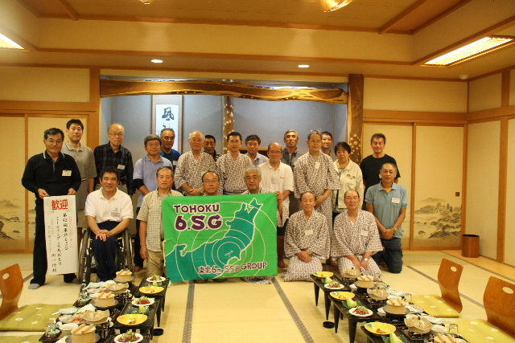
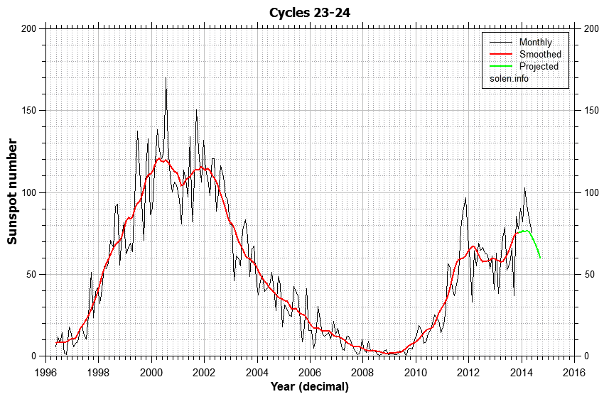

◎ 6SG(東北 6m SSB GROUP) Meeting (青森県つがる市)


U.K. Bases on CyprusからアクティブだったZC4LIがSK (De 5B4AIY)

[Back Issues 2013]
TIME:UTC(JST-09:00)
Report from JA1RJU(PM95sq)
31.Dec.2013(15:00c)
VK3OT 04:54 50.110 CW CQ
VK2ZT 04:54 50.110/120 CW CQ
VK2YOC 04:56 50.110 SSB CQ
VK2BA 04:57 50.110 SSB
VK2TK 04:59 50.110 SSB
VK2RHK/b 05:00- 50.288 CW Beacon
VK2YOC 05:09 50.140 SSB
VK3XDX 05:17 50.107 CW CQ
VK3TG 05:23 50.135 SSB @ Rod
VK2CA 05:27 50.130 SSB @ Alan
VK3BD 05:30 50.140 SSB @
VK3HY 05:33 50.103 CW
VK3XDX 05:34 50.105 CW
VK3GHZ 05:59 50.102 CW
VK7AC 05:49 50.110/150 SSB CQ QSY
VK2CA 05:51 50.125 SSB
VK2FAD 05:53 50.115 SSB
VK3XDX 05:54 50.105 CW CQ CQ
VK2BJ 06:03 50.102 CW CQ
Report from JA1RJU(PM95sq)
30.Dec.2013(15:00b)
Report from JA1RJU(PM95sq)
29.Dec.2013(15:00b)
Report from JA1RJU(PM95sq)
28.Dec.2013(15:00c)
V73SIX/B 04:20- 50.012 CW Beacon
DU1EV/B 07:00- 50.008 CW Beacon
DU1KA 07:13 50.110 CW CQ RST599
KH9/WA2YUN/B 07:20 50.014 CW Beacon RST599
(XW0YJY 08:00- 50.118 SSB Nothing hr in JA1=PM95)
Report from JA1RJU(PM95sq)
27.Dec.2013(15:00d)
KH9/WA2YUN/B 03:45 50.014 CW Beacon
VK4AMG 06:01 50.110 SSB
VK6KXW 06:02 50.110 CW CQ
VK2FZR 06:02 50.110/130 SSB CQ QSY UP
DU1KA 06:04 50.110 CW Calling VK2ZFR
DU1EV/B 06:05 50.008 CW Beacon
VK4TJ 06:06 50.110 CW CQ
VK4AMG 06:08 50.104 CW
DU1KA 06:09 50.105 CW CQ
VK4AAP 06:13 50.115 SSB
VK2FZR 06:18 50.120 SSB RS59+
VK4WTN 06:20 50.1045 CW CQ
VK2BLA 06:22 50.110 SSB
VK4AHW 06:23 50.110/130 SSB CQ
VK4EM 06:24 50.110 SSB CQ
VK4JAZ 06:34 50.110 SSB
VK2BLA 06:45 50.125 SSB @ Bill
VK4CMV 06:47 50.104 CW
VK6OX 06:51 50.100 CW
VK4CMV 07:01 50.104 CW @ RST599
VK4AAP 07:05 50.135 SSB
VK6KXW 07:18 50.108 CW
VK6RZ 07:28 50.103 CW
VK6JJ 07:34 50.101 CW CQ
VK6RPH/b 07:38 50.066 CW Beacon
DU1GM 08:55 50.110 CW CQ
Report from JA1RJU(PM95sq)
26.Dec.2013(15:00d)
FK8CP 03:12 50.110 CW CQ
FK8HA 03:23 50.110 SSB CQ QSY to 50.165
FK8HA 03:24 50.165 SSB @ Patrice RS59/59
VK2TS 06:03 50.110 SSB @ Tony
VK2BXT 06:04 50.115 SSB @ Kerry
VK4EM 06:07 50.115 SSB @ Harv
VK2BHO 06:10 50.101 CW
VK4AMG 06:12 50.101 CW
VK2DO 06:17 50.110/125 SSB CQ QSY
VK2DO 06:28 50.125 SSB @ Chris
Report from JA1RJU(PM95sq)
25.Dec.2013(15:00b)
Report from JA1RJU(PM95sq)
24.Dec.2013(15:00b)
Report from JA1RJU(PM95sq)
23.Dec.2013(15:00b)
V73SIX/B 06:35- 50.012 CW Beacon
V73SIX/B 07:10- 50.012 CW Beacon
Report from JA1RJU(PM95sq)
22.Dec.2013(15:00d)
ZL2WHO/B 23:50- 50.024 CW Beacon
-----------------------------------------------------------
ZL2WHO/B 00:01- 50.024 CW Beacon
VK2ZT 04:33 50.110 SSB
VK2NC 04:34 50.110 SSB
VK3EK 04:34 50.110 SSB
VK3OER 03:37 50.110 SSB
VK2NC 04:38 50.110 SSB @
VK2RHV/b 04:40 50.288 CW Beacon (QF32TE)
VK3BFH 04:43 50.110 SSB @
VK2ZT 04:45 50.110 SSB
VK4BG 04:46 50.110/145 SSB
VK4YH 04:46 50.110 SSB @
VK4AHW 04:48 50.128 SSB CQ
VK2BJ 04:50 50.102 CW CQ
VK4RF 04:52 50.102 CW
VK4WR 04:53 50.145 SSB
VK2NC 05:07 50.110 SSB
VK2YO 05:08 50.115 SSB
VK7XX 05:09 50.115 SSB
VK4CWJ 05:10 50.115 SSB
VK2TS 05:11 50.115 SSB
VK3XQ 05:12 50.115 SSB
VK4EK 05:12 50.115 SSB
VK2ZT 05:14 50.115 SSB
VK4AAP 05:15 50.115 SSB
VK4RF 05:16 50.115 SSB
VK7RR 05:18 50.115 SSB
VK4BRG 05:18 50.115 SSB
VK3EK 05:19 50.115 SSB
VK4YH 05:22 50.115 SSB
BA4SI 05:22 50.105 CW
VK4DV 05:24 50.110 SSB
VK2BHO 05:24 50.101 CW
VK3ANP 05:25 50.115 SSB
VK4DV 05:26 50.115 SSB
VK2BJ 05:27 50.102 CW
VK2NC 05:29 50.115 SSB
VK2YW 05:32 50.110 CW
VK3GHZ 05:37 50.108 CW
VK4CMV 05:56 50.110/105 CW
KH9/WA2YUN/B 05:52 50.014 CW Beacon
VK4CZ 05:58 50.110 SSB
VK4BG 06:05 50.110/145 SSB
VK4ARN 06:05 50.145 SSB
VK4OE 06:07 50.135 SSB
VK2ZT 06:26 50.110 SSB
VK2TS 06:28 50.110 SSB
DU1EV/B 07:20- 50.008 CW Beacon
Report from JA1RJU(PM95sq)
21.Dec.2013(15:00c)
ZL2WHO/B 04:50- 50.024 CW Beacon
VK4TJ 05:45 50.099 CW
VK3BDL 05:52 50.110 SSB
VK3XQ 05:53 50.110 SSB
VK7CW 05:53 50.104 CW
VK3AUQ 05:53 50.105 CW CQ
VK3AMK 06:12 50.127 SSB
VK3AUQ 06:24 50.107 CW @ RST599/599
VK3XQ 06:26 50.125 SSB
VK3BDL 06:28 50.120 SSB
VK3AMK 06:43 50.097 RTTY @ JEF RST599/599
VK3HY 06:47 50.102 CW CQ
ZL4PW 06:52 50.110 CW
ZL4PW 07:20 50.110 CW RST599
ZL4LV 07:22 50.110/115 SSB
Report from JA1RJU(PM95sq)
20.Dec.2013(15:00b)
Report from JA1RJU(PM95sq)
19.Dec.2013(15:00c)
V73SIX/B 02:28- 50.012 CW Beacon
V73SIX/B 03:45- 50.012 CW Beacon RST599
Report from JA1RJU(PM95sq)
18.Dec.2013(15:00c)
V73SIX/B 02:50- 50.012 CW Beacon
V73SIX/B 04:30- 50.012 CW Beacon still good!
Report from JA1RJU(PM95sq)
17.Dec.2013(15:00c)
V73SIX/B 02:02- 50.012 CW Beacon weak
V73SIX/B 02:37- 50.012 CW Beacon Sig up
E6RQ 04:15 50.110 CW (ex ZK2=Niue)
Report from JA1RJU(PM95sq)
16.Dec.2013(15:00c)
VK5JL 04:13 50.130 SSB
VK5ZK 04:23 50.135 SSB
VK5PO 04:26 50.105 CW CQ
VK5PO 04:58 50.096 RTTY @ John RST599/599
VK6KXW 08:43 50.110 CW CQ
Report from JA1RJU(PM95sq)
15.Dec.2013(15:00c)
FK8CP 23:37 50.110 CW CQ
---------------------------------------------------------------
VK5PO 00:14 50.110 SSB CQ
VK5ZK 00:34 50.110 SSB
VK5SIX 00:47 50.100 CW
Report from JA1RJU(PM95sq)
14.Dec.2013(15:00b)
Report from JA1RJU(PM95sq)
13.Dec.2013(15:00b)
Report from JA1RJU(PM95sq)
12.Dec.2013(15:00b)
Report from JA1RJU(PM95sq)
11.Dec.2013(15:00b)
Report from JA1RJU(PM95sq)
10.Dec.2013(15:00b)
Report from JA1RJU(PM95sq)
09.Dec.2013(15:00d)
VK6KXW 06:06 50.110 CW CQ RST599
VK6KXW 06:20 50.105 CW @ Peter RST599/559
VK6KXW 06:42 50.110 CW CQ
VK6OX 07:00 50.110 CW CQ
VK3OT 07:40 50.110 CW CQ
Report from JA1RJU(PM95sq)
08.Dec.2013(15:00c)
VK3DUT 05:59 50.110/140 SSB CQ QSY to 140
VK5DK 06:08 50.110 SSB @ RS57/57
VK3DUT 06:10 50.140 SSB @ Norm RS59/59
VK2ZT 06:15 50.110 SSB CQ
Report from JA1RJU(PM95sq)
07.Dec.2013(15:00b)
Report from JA1RJU(PM95sq)
06.Dec.2013(15:00b)
Report from JA1RJU(PM95sq)
05.Dec.2013(15:00b)
Report from JA1RJU(PM95sq)
04.Dec.2013(15:00e)
V73SIX/B 01:05- 50.012 CW Beacon
KH9/WA2YUN/B 01:20- 50.014 CW Beacon
KH9/WA2YUN/B 03:45- 50.014 CW Beacon
VK7XX 03:50 50.130 SSB
VK3II 03:55 50.140 SSB
VK4AMG 04:02 50.111 CW CQ RST599
VK2ZT 04:05 50.110 SSB
VK4AHW 04:08 50.110/135 SSB
VK4RF 04:09 50.110 SSB
VK3DUT 04:15 50.110 SSB CQ
VK4AMG 04:23 50.110/100 CW CQ
VK5JR 04:25 50.110 SSB
VK4WTN 04:57 50.104 CW CQ
VK3GHZ 05:01 50.104 CW CQ
Report from JA1RJU(PM95sq)
03.Dec.2013(15:00b)
Report from JA1RJU(PM95sq)
02.Dec.2013(15:00b)
Report from JA1RJU(PM95sq)
01.Dec.2013(15:00b)
[Back Issues Nov.2013]
TIME:UTC(JST-09:00)
Report from JA1RJU(PM95sq)
30.Nov.2013(15:00b)
Report from JA1RJU(PM95sq)
29.Nov.2013(15:00b)
Report from JA1RJU(PM95sq)
28.Nov.2013(15:00b)
Report from JA1RJU(PM95sq)
27.Nov.2013(15:00b)
Report from JA1RJU(PM95sq)
26.Nov.2013(15:00b)
Report from JA1RJU(PM95sq)
25.Nov.2013(15:00b)
Report from JA1RJU(PM95sq)
24.Nov.2013(15:00c)
VK4AMG 02:36 50.110/165 SSB CQ
ZL2WHO/B 02:50- 50.024 CW Beacon
(S21ZBB 06:24 50.130 SSB JA5.6)
9V1TT 07:20 50.115 SSB RS59
Report from JA1RJU(PM95sq)
23.Nov.2013(15:00b)
Report from JA1RJU(PM95sq)
22.Nov.2013(15:00d)
VK4AMG 03:19 50.110/105 CW CQ RST599
VK4RF 03:29 50.110/145 SSB CQ
VK4AHW 03:29 50.110/150 SSB CQ
VK4RF 03:33 50.145 SSB @ Rick RS59
VK2EMA 03:37 50.150 SSB
VK2EMA 03:41 50.150 SSB @ Mark RS59
VK5BC 04:47 50.110 SSB CQ
DU1EV/B 08:00- 50.008 CW Beacon RST599
XV2AG 08:07 50.130 SSB/CW
DU1GM 08:47 50.110 SSB CQ
Report from JA1RJU(PM95sq)
21.Nov.2013(15:00b)
Report from JA1RJU(PM95sq)
20.Nov.2013(15:00c)
DU1EV/B 08:07- 50.008 CW Beacon RST599
XV2V40J 08:10 50.130 SSB
(S21ZBC 08:45 50.110 SSB into JA6=Kyusyu)
Report from JA1RJU(PM95sq)
19.Nov.2013(15:00d)
V73SIX/B 05:50- 50.012 CW Beacon
VK6KXW 06:03 50.110 CW CQ
XV2AG 07:45 50.130 SSB
Report from JA1RJU(PM95sq)
18.Nov.2013(15:00c)
V73SIX/B 03:30- 50.012 CW Beacon
VK4DDC 03:34 50.110 CW
XV2AG 07:20 50.130 SSB QSL to JA4AGA
(S21ZBC 07:54 50.135 SSB into JR6=Okinawa)
Report from JA1RJU(PM95sq)
17.Nov.2013(15:00f)
KH7Y 02:35 50.105 CW
VK4AMG 03:01 50.105 CW CQ RST599
KH9/WA2YUN/B 03:35- 50.014 CW Beacon RS599
VK4WR 03:44 50.110 SSB
VK4ZL 03:55 50.110 SSB
VK4ZJB 03:55 50.110 SSB
VK4EM 03:47 50.120 SSB
ZL2WHO/B 03:50- 50.024 CW Beacon RST599
VK4EDD 03:58 50.115 SSB CQ
V73SIX/B 04:29 50.012 CW Beacon
VK4AMG 04:40 50.165 SSB
VK4AMG 04:42 50.110 CW CQ RST599
VK6RPH/b 05:27- 50.066 CW Beacon
VK6RO 05:30 50.110 SSB CQ
VK6KDX 05:32 50.135 SSB @ QTH QF78VE
VK6JJ 05:35 50.165 SSB
VK6OX 05:40 50.105 CW
VK6RBU/b 05:44- 50.306 CW Beacon
VK6KXW 06:20 50.094 JT65 -6bB
VK6KXW 06:26 50.094 RTTY @ RST579/599
9M2/JG3TTO 07:04 50.105 CW @ RST559
XV2AG 08:26 50.130 SSB @ RS59
Report from JA1RJU(PM95sq)
16.Nov.2013(15:00c)
(XR0ZR 01:12 50.106 CW into JA8)
XV3NF 05:30 50.120 SSB
Report from JA1RJU(PM95sq)
15.Nov.2013(15:00d)
V73SIX/B 02:56- 50.012 CW Beacon
V73SIX/B 03:47- 50.012 CW Beacon
V73SIX/B 05:20- 50.012 CW Beacon RST599
VK5RO 05:20 50.110 CW
VK7DX 05:44 50.110 SSB RS59
V73SIX/B 07:30- 50.012 CW Beacon
YB2DX 08:20 50.110 SSB
VK8MS 08:23 50.110 CW CQ
Report from JA1RJU(PM95sq)
14.Nov.2013(15:00d)
K9W 04:45 50.107 CW RS599
K9W 05:30 50.107 SSB
V73SIX/B 05:32- 50.012 CW Beacon weak
KH9/WA2YUN/B 05:32- 50.014 CW Beacon RS599
VK4AMG 05:40 50.107 SSB CQ
XV3NF 05:40 50.130 SSB RS59
K9W 05:43 50.107 SSB RS59+ UP 50.110-113MHz
VK4ZJB 05:47 50.107 SSB
K9W 06:20 50.107 SSB RS59++ UP
K9W 06:20 50.107 CW RS599+
K9W 06:52 50.107 CW @ RS599++ (UP 5)
Report from JA1RJU(PM95sq)
13.Nov.2013(15:00c)
VK3DUT 03:23 50.114/140 SSB
VK4AMG 03:25 50.110 SSB CQ
VK3HY 04:30 50.103 CW CQ
VK3XDX 04:33 50.108 CW CQ
VK3XQ 04:45 50.095 CW CQ
Report from JA1RJU(PM95sq)
12.Nov.2013(15:00e)
V73SIX/B 23:30- 50.012 CW Beacon RST599
-----------------------------------------------------------------
LU5FF 01:02 50.094 CW CQ Weak
ZL2WHO/B 01:40- 50.024 CW Beacon
ZL2WHO/B 01:50- 50.024 CW Beacon RST599
ZL1RS 02:30 50.130 SSB RS59+
FK8SIX/B 02:40- 50.080 CW Beacon
ZL1ANH 03:03 50.110 SSB @ Brian
ZL2CS 03:12 50.125 SSB @ Ray
ZL4XE 03:16 50.110 SSB @ Paul
FK8CP 03:19 50.110 CW CQ
ZL1NX 03:22 50.099 CW CQ
VK5RM/4 03:23 50.091 JT65 WSJT (CQ VK5RM QG62) -5dB
VK5RM/4 03:41 50.090 JT65 "JT9 QSY 50.09" -6dB
ZL2WHO 04:15 50.130 SSB
Report from JA1RJU(PM95sq)
11.Nov.2013(15:00b)
V73SIX/B 04:30- 50.012 CW Beacon RST599
Report from JA1RJU(PM95sq)
10.Nov.2013(15:00e)
V73SIX/B 23:00- 50.012 CW Beacon RST599
KH9/WA2YUN/B 23:35- 50.014 CW Beacon
CE2AWW 23:43 50.102 CW
KH7Y 23:53 50.100 CW
ZP5SNA 23:54 50.0985 CW
-----------------------------------------------------------------
ZP5SNA 00:06 50.0985 CW @ RST559/569
CE2AWW 00:15 50.102 CW
KH7Y 00:36 50.100 CW
KH7JJ 00:40 50.120 SSB
K9W 00:47 50.113 SSB RS59+
AH7C 00:55 50.108 CW
AH7C 01:05 50.108 CW @
KH6SX 01:07 50.103 CW
KH7Y 01:10 50.090 CW
KH9/WA2YUN/B 01:15 50.014 Beacon
LU5FF 01:25 50.094 CW
ZP5SNA 01:28 50.0985 CW
K9W 01:30 50.113 SSB RS59+ UP
ZL2WHO 01:36 50.130 SSB
ZL1NX 01:40 50.100 CW
ZL2AO 01:44 50.135 SSB
ZL2OK 01:45 50.130 SSB
ZL1TPH 01:48 50.140 SSB
ZL2AO 01:52 50.135 SSB @ RS59
VK3DUT 01:55 50.145 SSB
VK4AHW 02:57 50.135 SSB
ZL3JT 03:06 50.101 CW CQ
ZL3NW 03:07 50.101 CW
ZL3JT 03:35 50.104 CW CQ
V73SIX/B 04:35- 50.012 CW Beacon RST599
V73SIX/B 05:25- 50.012 CW Beacon RST599
|
◎ 今朝の6mはサイクル24の秋のDX-シーズンの中では最もFBなコンデションとなった。早朝からKH9/WA2YUN/B、V73SIX/Bが強力に入感、
コンデションの上昇が感じられた。 間もなく50.3102MHzでCE2AWWが入感、JA’sのパイルアップが始まった。 前後してKH7Yが強力に聞こえ始め、同時にKH6SX、KH6HI、AH7C、KH7JJなどもCW/SSBで入感し始め、東方向のDXコンデションは急上昇。 2354JST頃から、KH7Yが出ていた50.100MHzの少し下で、パラグアイのZP5SNAが入感し始め、ここでもJA'sのパイルアップが始まった。 アンテナ方向は90度。 ZP5SNA(opはJA1SNA/山口さん)からの情報によると、 この日、50.102MHzCE2AWWがJAのパイルアップを受けているのを聞いていたところ、突然JAの信号が聞こえだしたので、50.0985MHzでCQを出したとの事。2351z(0851JST)の3回目のCQに応答して来たJP1の局がこの日の初QSOだったと。ZP5SNAからのJAのビーム方向は通常330度だが、 真西の270度方向からの入感だったとの事。 コンデションは、最初は東日本で比較的良く聞こえていたが、徐々にオープンのエリアが広がり、DXをコールするJA国内のスキャッターも強力に 入感し、DXバンドは、DXをコールする信号で埋まった。 ZP5SNAではこの日、0135z（1035JST）頃までの約2時間のオープンで70局以上のJAとQSO出来たと。 0900JSTを回った頃から、Wake島のK9Wも50.113MHzのSSBで59+で入感、前日の50.107MHzでの大オープンに劣らないJA'sがパイルに加わった。 前日のK9WのオープンはJA7、8での北日本では入感状態が良くなかったが、今朝は東日本が有利だった。 1000JSTを過ぎる頃から、JA1では南米のコンデションは落ち始めたものの、K9Wは相変わらず1030JST頃も強力に入感していた。 最後まで聞こえて居たLU5FFも、今日はCE2AWW、ZP5SNAなどに隠れてあまり呼ばれるチャンスは無かった模様。 南米が急激に落ち始めた1030JST頃からZL1/2/3が聞こえ始め、コンデションは徐々に移ってしまった。 K9Wは前日のオープンでは手元にKeyが無いのでCWでの運用は出来ないとの事だったが、今日は1220JST頃に再び50.107MHzでCWで出てきたが、 この時間帯にはオープンしているエリアはJA6など西日本だけで、JA1ではK9WのCWの信号は聞くことが出来なかった。 明日のコンデションも期待したいところだが"6mには2匹目のドジョウ"は居ない？。 |
Report from JA1RJU(PM95sq)
09.Nov.2013(15:00e)
KH7Y 02:00 50.105 CW CQ
KH6SX 02:10 50.110 CW CQ
(K9W 02:11 50.107 SSB JA3-6 UP2-3)
KH7Y 02:28 50.099 CW @ UP2
VK4TW 02:42 50.125 SSB
K9W 03:00 50.1074 SSB Sig UP
K9W 03:29 50.1074 SSB @ RS59/59 UP
KH9/WA2YUN/B 03:40- 50.014 CW Beacon
V73SIX/B 03:40- 50.012 CW Beacon
K9W 04:15 50.1074 SSB still RS59 (UP 1-20)
K9W 04:43 50.1074 SSB F.OUT(JA1)
DU1EV/B 05:25- 50.008 CW Beacon
DU1KA 05:36 50.102 CW CQ
Report from JA1RJU(PM95sq)
08.Nov.2013(15:00c)
FK8CP 02:25 50.110 CW CQ SA
FK8SIX/B 02:25- 50.080 CW Beacon
(K9W 03:11 50.107 SSB into JA6 Down 5)
XV2V40J 06:50 50.110 SSB CQ
Report from JA1RJU(PM95sq)
07.Nov.2013(15:00d)
KH7Y 03:42 50.107 CW CQ
K9W 03:45 50.110 SSB CQ UP
KH7Y 03:57 50.112/107 CW CQ
XV2V40J 06:35 50.110 SSB
XV2V40J 06:58 50.110 SSB @ RS59/59
(3B8DB 08:28 50.110 SSB JE6=Kyusyu)
Report from JA1RJU(PM95sq)
06.Nov.2013(15:00d)
LU5FF 00:53 50.107 CW CQ CQ RST599 at peak. stop CQ 01:13
KH7Y 02:02 50.105 CW CQ
KH6SX 02:10 50.102 CW CQ
KH9/WA2YUN/B 02:11- 50.014 CW Beacon
KH6HI 02:18 50.110 CW @ RST559/559
ZL1RS 02:20 50.1035 CW
V73SIX/B 02:20- 50.012 CW Beacon
KH7Y 02:21 50.105 CW CQ RST599
VK4AMG 02:30 50.106 CW CQ
KH9/WA2YUN/B 02:30- 50.014 CW Beacon RST599+
VK5RM/4 02:40 50.108 CW
KH6HI 02:51 50.112 CW CQ CQ
(3B8DB 08:38 50.110 SSB JS6=Okinawa)
Report from JA1RJU(PM95sq)
05.Nov.2013(15:00b)
V73SIX/B 04:50- 50.012 CW Beacon
Report from JA1RJU(PM95sq)
04.Nov.2013(15:00c)
KH9/WA2YUN/B 03:50- 50.014 CW Beacon RST599
VK5RM/4 03:55 50.106 CW
VK2WDD 04:16 50.110/115 SSB CQ QSY
VK4AMG 04:35 50.110/102 CW CQ QSY
V73SIX/B 04:38- 50.012 CW Beacon
V73NS 05:40 50.107 CW CQ
V73SIX/B 05:40- 50.012 CW Beacon
Report from JA1RJU(PM95sq)
03.Nov.2013(15:00e)
KH9/WA2YUN/B 03:10- 50.014 CW Beacon RST599
V73NS 03:22 50.107 CW CQ RST559
V73NS 03:29 50.107 CW @ QSL via W3HNK
VK4WM 03:35 50.103 CW CQ
V73NS 03:45 50.107 CW RST599 UP1-2
V73SIX/B 03:50- 50.012 CW Beacon RST599
KH9/WA2YUN/B 03:50- 50.014 CW Beacon RST599
KH7Y 03:55 50.110 CW
V73NS 04:55 50.107 CW CQ CQ still RST599 UP1-2
V73NS 04:58 50.107 CW QRT!!
FK8CP 05:00 50.110 CW CQ
VK4WM 05:08 50.103 CW CQ
Report from JA1RJU(PM95sq)
02.Nov.2013(15:00d)
LU5FF 01:05 50.107 CW
FK8CP 01:52 50.110 CW CQ WI RST599
FK1TK 01:53 50.110/120 SSB CQ and QSY RS59+
FK8SIX/B 01:53- 50.080 CW Beacon
FK8CP 02:20 50.110 SSB CQ WI
FK1TK 02:25 50.130 SSB
V73SIX/B 02:33- 50.012 CW Beacon
VK4WR 02:34 50.110/170 SSB
VK4RO 02:34 50.110 SSB
VK4AMG 02:40 50.101/105 CW CQ
VK5RM/4 02:58 50.1085/115 CW/SSB
VK4EK 03:14 50.110 SSB
VK4DAM 03:14 50.110 SSB
VK2FZR 03:20 50.124 SSB
VK4ZD 03:23 50.120 SSB
V73NS 04:30 50.107 CW CQ
V73SIX/B 04:30- 50.012 CW Beacon
KH9/WA2YUN/B 04:38- 50.014 CW Beacon
Report from JA1RJU(PM95sq)
01.Nov.2013(15:00c)
LU5FF 00:40 50.106 CW/SSB
V73SIX/B 03:20- 50.012 CW Beacon RST599
[Back Issues Oct.2013]
TIME:UTC(JST-09:00)
Report from JA1RJU(PM95sq)
31.Oct.2013(15:00d)
LU5FF 00:15 50.094 CW
LU5FF 00:27 50.094 CW @ RST579/599
LU5FF 00:38 50.106 SSB @ RS59/59
LU5FF 00:50 50.099 RTTY
LU5FF 01:10 50.096 CW CQ
LU5FF 01:27 50.099 RTTY
LU5FF 01:30 50.096 CW CQ CQ QRT!
BA4SI 02:40 50.101 CW CQ
Report from JA1RJU(PM95sq)
30.Oct.2013(15:00c)
LU6DRV 0002Z 50133.0 cq JH8LLE
----------------------------------------------------------------
VK3XDX/4 03:29 50.105 CW CQ
VK5RM 03:29 50.106 CW CQ
VK4TW 03:30 50.110 SSB CQ
VK4CMV 03:30 50.120 SSB
VK4EK 03:30 50.110 SSB CQ
FK8SIX/B 03:35- 50.080 CW Beacon
VK4RF 03:35 50.125 SSB CQ
V73SIX/B 06:25 50.012 CW Beacon RST599
Report from JA1RJU(PM95sq)
29.Oct.2013(15:00b)
V73SIX/B 04:30- 50.012 CW Beacon
VK4AMG 04:36 50.105 CW
VK4WM 04:40 50.103 CW
V73SIX/B 06:00- 50.012 CW Beacon
VK6RSX/b 12:00- 50.304 CW Beacon
----------------------------------------------------------------
CE3MUZAK 2327Z 50110.0 QN03 FF46 57QSB JL8GFB
LU9DO 2332Z 50110.0 SSB tu JL8GFB
LU9DO 2341Z 50105.0 55 JA8TSG
CX3ET 2347Z 50120.0 tu SSB 59 JL8GFB
CX2SC 2349Z 50110.0 SSB big sig QN03-GF15 JL8GFB
CX6DH 2357Z 50120.0 59/58 JL8GFB
----------------------------------------------------------------
Report from JA1RJU(PM95sq)
28.Oct.2013(15:00d)
V73SIX/B 04:30 50.012 CW Beacon
VK4WM 04:30 50.102 CW
VK4EK 04:31 50.110 SSB CQ
VK6RSX/b 12:25- 50.304 CW Beacon
Report from JA1RJU(PM95sq)
27.Oct.2013(15:00f)
VK4WTN 04:40 50.105 CW
VK4AMG 04:43 50.110/106 CW
VK4BLK 04:43 50.110 CW CQ
VK4BG 04:58 50.110 SSB
VK4AHW 04:59 50.110 SSB CQ
YB9Y 05:05 50.110/105 CW/SSB CQ
YB9Y 06:50 50.105 SSB CQ
ZL1RS 08:20 50.110 CW CQ CQ
VK4WM 08:34 50.110 CW
VK4AMG 08:35 50.110 CW CQ
VK4BG 08:43 50.110 SSB CQ DX
Report from JA1RJU(PM95sq)
26.Oct.2013(15:00d)
YB9Y 05:00 50.110 CW CQ
V73SIX/B 05:01 50.012 CW Beacon
VK4AMG 05:02 50.110 CW
V73SIX/B 05:30 50.012 CW Beacon RST599
VK4MA 05:33 50.110 CW
VK4WR 05:37 50.110 SSB CQ
VK4EK 05:41 50.110 SSB CQ
VK4WR 05:48 50.101 CW CQ
ZL1RS 08:03 50.110 CW
ZL2WHO/B 08:05- 50.024 CW Beacon
ZL1RS 08:20 50.103 CW/SSB
Report from JA1RJU(PM95sq)
25.Oct.2013(15:00d)
VK6IR 05:15 50.110 CW/SSB
VK6KXW 05:26 50.110 CW CQ
VK6KR 05:57 50.110 SSB CQ
YB9Y 06:06 50.110 CW CQ RST599 UP
VK6KXW 06:21 50.111 CW CQ
YB9Y 06:27 50.110 SSB RS59
VK6IR 07:20 50.105 CW
YB9Y 07:30 50.105 SSB CQ
VK6OX 07:57 50.105 CW CQ
VK6RSX/b 10:38- 50.304 CW Beacon
Report from JA1RJU(PM95sq)
24.Oct.2013(15:00d)
CE2AWW 01:55 50.102 CW
(LU5FF 02:00 50.094/91 CW JA1-2)
(ZP5SNA 02:10 50.0985 CW QSO with JA1-3)
YB9Y 05:28 50.110 CW/SSB CQ
YB9Y 06:28 50.110 CW/SSB CQ
Report from JA1RJU(PM95sq)
23.Oct.2013(15:00f)
FK8CP 03:10 50.110 CW CQ RST599
FK8SIX/B 03:15- 50.080 CW Beacon
FK8CP 03:18 50.110 SSB/CW CQ WI
VK4AMG 03:50 50.110 CW
VK4WTN 03:52 50.103 CW
VK5RM 03:57 50.140 SSB
VK4TJ 04:12 50.099 CW CQ
VK4ZJB 04:22 50.110 SSB CQ
VK6KXW 04:29 50.110 CW
VK4CMV 04:36 50.105 CW
YB9Y 07:13 50.110 CW @ RST579
9M6XRO 07:20 50.110 CW CQ
YB9Y 07:24 50.110 SSB
YB9Y 08:30 50.110 SSB
YB9Y 08:44 50.110 SSB @ RS57/59
Report from JA1RJU(PM95sq)
22.Oct.2013(15:00b)
LU5FF 01:02 50.095 CW Weak
Report from JA1RJU(PM95sq)
21.Oct.2013(15:00e)
ZL2WHO/B 03:18- 50.024 CW Beacon weak
VK4WTN 03:25 50.103 CW CQ RST599
VK4AHW 03:32 50.110 SSB
VK4BLK 03:58 50.110 CW CQ
VK4JAO 04:12 50.130 SSB Arno
VK5BC 04:22 50.140 SSB @ Brian RS59
VK6IR 05:06 50.120 SSB @ Steve RS59
DU1EV/B 05:08- 50.008 CW Beacon
N7ET/DU7 05:20 50.099 CW RST599
VK5PO 05:28 50.102 CW CQ CQ
VK6RO 05:30 50.095 CW
VK6RBU/b 05:33- 50.306 CW Beacon
N7ET/DU7 05:39 50.123 SSB
N7ET/DU7 05:54 50.123 SSB @ Dale RS59
VK6IR 06:00 50.100 CW CQ RST599
VK6KXW 06:05 50.109 CW CQ
VK6IR 06:25 50.110/120 SSB CQ RS59
VK6RBU/b 06:25- 50.306 CW Beacon still in
VK6RO 06:38 50.110 CW CQ
VK6RPH/b 06:40- 50.066 CW Beacon
Report from JA1RJU(PM95sq)
20.Oct.2013(15:00d)
V73SIX/b 03:45- 50.012 CW Beacon RST599
VK6RSX/b 06:37- 50.304 CW Beacon
VK6KXW 06:37 50.090 JT65a
VK6RSX/b 09:45- 50.304 CW Beacon RST599
Report from JA1RJU(PM95sq)
19.Oct.2013(15:00g)
VK4MA 02:43 50.102 CW CQ
VK4CMV 02:45 50.133/105 CW
V73SIX/b 02:55- 50.012 CW Beacon
VK4YH 02:56 50.110/115 SSB CQ
VK4KX 02:59 50.122 SSB @ RS59
VK4CQ 03:04 50.122 SSB
VK5RM/4 03:04 50.140 SSB @ RS59 Bill
VK4AMG 03:06 50.165 SSB
VK7RR/4 03:07 50.170 SSB @ RS59 Brian
FK8CP 03:10 50.110 CW CQ
VK4CQ 03:14 50.122 SSB @ RS59 Ross
VK4WM 03:18 50.147/142 SSB
VK4AH 03:24 50.160 SSB @ RS59 Garry
VK4KJJ 03:28 50.170 SSB @ RS59 Jeoff
VK4AHW 03:34 50.110 SSB
VK4ZJB 03:36 50.110 SSB CQ
V73SIX/b 04:30- 50.012 CW Beacon RST599
ZL1RS 04:36 50.104 CW RST599
DU1EV/B 04:39- 50.008 CW Beacon RST599
VK8GM 04:53 50.255 SSB @
VK6KXW 04:56 50.106 CW
DU7/PA0HIP 05:12 50.105 CW CQ
6K2EJJ 07:44 50.105 CW
DU7/PA0HIP 07:54 50.110 CW CQ RST599+
Report from JA1RJU(PM95sq)
18.Oct.2013(15:00d)
VK2WDD 02:45 50.115 SSB
VK6KXW 04:09 50.110 CW CQ
V73SIX/b 05:19- 50.012 CW Beacon
DU7/PA0HIP 06:24 50.110 CW CQ
KH0/JF1UMK 08:53 50.120 CW CQ weak
Report from JA1RJU(PM95sq)
17.Oct.2013(15:00d)
ZL1RS 02:04 50.1075 CW CQ RST599
FK8CP 02:07 50.110 CW CQ NA
ZL1NX 02:14 50.110 CW @
KH9/WA2YUN/b 02:17- 50.014 CW Beacon
VK4AMG 02:20 50.101 CW CQ
VK4EK 02:20 50.110/130 CW CQ
ZL1NX 02:21 50.105 CW
VK4WM 02:24 50.102 CW
FK8CP 02:07 50.089 CW CQ
VK4AHW 02:44 50.145 SSB CQ RS59
VK4VM 02:50 50.140 SSB
VK4RY 02:51 50.190 SSB
V73SIX/b 05:55- 50.012 CW Beacon RST599
VK8MS 07:45 50.110 CW CQ RST599
Report from JA1RJU(PM95sq)
16.Oct.2013(15:00d)
(ZP5SNA 02:41 50.110 CW JE6)
(LU5FF 02:43 50.110 CW JE6)
VK4MW 03:02 50.110 CW CQ
VK4ZJB 03:13 50.110/140 CW/SSB CQ CQ
VK4EK 03:20 50.110 SSB CQ
VK4WTN 03:45 50.102 CW CQ
VK4AMG 03:51 50.106 CW
| ◎ 10年に一回と言われる大型台風26号が、06:00-09:00JST頃に伊豆諸島を通過し、伊豆大島では800mm/h以上の豪雨で甚大な被害を受けた。暴風圏が広く100Kmほど離れている東京の西部地域でも30m/h近い暴風雨が吹き荒れた。 東京都内でも30m近い強風が吹き、台風の中心部では50mを超え、午後には福島の太平洋沖に達している。 |
Report from JA1RJU(PM95sq)
15.Oct.2013(15:00b)
Report from JA1RJU(PM95sq)
14.Oct.2013(15:00c)
VK6RSX/b 06:55- 50.304 CW Beacon
VK4RHT/b 12:15- 50.281 CW Beacon
VK4RTL/b 12:15- 50.282 CW Beacon
VK4TVL/-? 12:15 50.295 -- -- S9
VK6RSX/b 12:15- 50.304 CW Beacon
VK8VF/b 12:15- 50.310 CW Beacon
VK4JU 12:27 50.110 CW QRZ DX
Report from JA1RJU(PM95sq)
13.Oct.2013(15:00c)
DU7/PA0HIP 13:08 50.110 CW
VK6RSX/b 13:15- 50.304 CW Beacon
VK8VF/b 13:15- 50.310 CW Beacon
Report from JA1RJU(PM95sq)
12.Oct.2013(15:00d)
FK8CP 02:05 50.110 CW CQ
FK8SIX/B 02:05- 50.080 CW Beacon
FK1TK 02:12 50.115 SSB RS59
FK8CP 03:00 50.110 CW/SSB CQ CQ
Report from JA1RJU(PM95sq)
11.Oct.2013(15:00f)
FK8CP 02:21 50.110 CW CQ
FK8SIX/B 02:21- 50.080 CW Beacon
VK4AFL 02:30 50.110 SSB CQ
VK4DCM 02:31 50.110 SSB CQ
VK4AMG 02:38 50.110 SSB
VK4DCM 02:45 50.110/125 SSB
FK8CP 02:49 50.110 CW CQ CQ
VK4AFL 02:54 50.177 SSB
VK4NW 02:58 50.110 SSB
VK4BG 02:59 50.110 SSB CQ
VK2WDD 03:01 50.120 SSB
VK4AMG 03:05 50.106 CW
VK4WTN 03:13 50.101 CW
VK4ZJB 03:16 50.110 SSB
VK4DCM 03:32 50.110/120 SSB @ Ross RS59
VK5PO 03:35 50.110 CW CQ
VK4APE 03:40 50.110 SSB
VK4HJ 03:50 50.110/120 SSB @ QSY/QRM
VK4XE 04:00 50.110 SSB
VK4EK 04:14 50.110 SSB CQ
VK6KXW 06:52 50.110 SSB CQ
T88IK 07:15 50.110→130 SSB RS59
T88IK 07:56 50.130 SSB @ RS59+ QSL to JF1LUT
DU1EV/B 08:00- 50.008 CW Beacon RST599
VK6RSX/b 08:00- 50.304 CW Beacon
FK8CP 09:00 50.130 CW CQ
VK6OC 09:12 50.120 SSB CQ
VK4ZJB 09:21 50.110/137 SSB CQ
VK4AMG 09:28 50.110 CW
VK5PO 09:42 50.110 CW CQ
VK6OC 09:44 50.110 SSB
Report from JA1RJU(PM95sq)
10.Oct.2013(15:00b)
VK6RSX/b 09:46- 50.304 CW Beacon
Report from JA1RJU(PM95sq)
05-09.Oct.2013(00:00a)
◎2013 SEANET CONVENTION YOKOHAMA (8N1SEA)
Report from JA1RJU(PM95sq)
04.Oct.2013(15:00c)
VK4RTL/b 05:30- 50.282 CW Beacon
VK6RSX/b 06:04- 50.304 CW Beacon
Report from JA1RJU(PM95sq)
03.Oct.2013(15:00d)
VK4RHT/b 09:30- 50.281 CW Beacon
VK4RTL/b 09:30- 50.282 CW Beacon
VK4TVL/-? 09:30 50.295 -- -- S9
VK6RSX/b 09:40- 50.304 CW Beacon
VK4RHT/b 12:20- 50.281 CW Beacon
VK4RTL/b 12:20- 50.282 CW Beacon
VK6RSX/b 12:20- 50.304 CW Beacon
VK8VF/b 12:20- 50.310 CW Beacon
Report from JA1RJU(PM95sq)
02.Oct.2013(15:00e)
V73SIX/b 06:20- 50.013.5 CW Beacon RST599
KH9/WA2YUN/b 06:28- 50.014 CW Beacon RST599
DU1EV/B 06:40 50.008 CW Beacon
9M6ZAE 06:41 50.120 SSB RS59
DU7/PA0HIP 06:45 50.105 CW CQ
DU1KA 06:50 50.101 CW @ RST599
KG6DX 06:57 50.115 SSB
ZL1RS 07:07 50.110 CW CQ
Report from JA1RJU(PM95sq)
01.Oct.2013(15:00b)
--------------------------------------------------------------------
[Back Issues Sep.2013]
TIME:UTC(JST-09:00)
Report from JA1RJU(PM95sq)
30.Sep.2013(15:00b)
Report from JA1RJU(PM95sq)
29.Sep.2013(15:00d)
KH9/WA2YUN/b 08:37- 50.014 CW Beacon
V73SIX/b 08:44- 50.013.5 CW Beacon
V73NS 08:49 50.107 CW weak
V73NS 09:25 50.110 CW NW QSY CQ
V73NS 09:36 50.110 CW @ RST559
V73NS 09:48 50.110 CW CQing
FK8CP 09:52 50.110 CW CQ CQ on V73NS QRM!
Report from JA1RJU(PM95sq)
28.Sep.2013(15:00c)
VK4RHT/b 10:30- 50.281 CW Beacon
VK6RSX/b 10:30- 50.304 CW Beacon
3D2RA 09:45 50.108 CW Rotuma Is.
3D2RA 10:36 50.108 CW @ RST599
3D2RA 10:42 50.108 CW CQing
FK8CP 10:54 50.108 CW Calling 3D2
Report from JA1RJU(PM95sq)
27.Sep.2013(15:00c)
VK4WTN 04:58 50.105 CW CQ
VK4AHW 05:02 50.110 SSB CQ
VK6RSX/b 05:37- 50.304 CW Beacon
Report from JA1RJU(PM95sq)
26.Sep.2013(15:00c)
VK4RHT/b 10:20- 50.281 CW Beacon
VK6RSX/b 13:15- 50.304 CW Beacon
VK8VF/b 13:15- 50.310 CW Beacon
Report from JA1RJU(PM95sq)
25.Sep.2013(15:00f)
VK4WTN 05:33 50.105 CW CQ
VK4AHW 05:35 50.123 SSB CQ
VK4ZJB 05:35 50.110→137 SSB CQ HL/DS
VK4WM 05:37 50.100 CW CQ
FK8SIX/b 05:45- 50.080 CW(FSK) Beacon
V73SIX/b 05:45- 50.013.5 CW Beacon
FK8GX 06:10 50.1115 CW
VK4WTN 06:20 50.110→155 SSB CQ
VK4BG 06:22 50.110→136 SSB CQ
FK8GX 06:10 50.110 SSB CQ
FK8CP 06:36 50.110 CW CQing
V73SIX/b 06:45- 50.013.5 CW Beacon still good!
VK4EK 06:58 50.110→130 SSB CQ
VK4RTL/b 08:23- 50.282 CW Beacon
VK6RSX/b 08:23- 50.304 CW Beacon
VK4TVL/-? 08:30 50.295 -- -- S9
VK4RHT/b 11:35- 50.281 CW Beacon
VK6RSX/b 11:35- 50.304 CW Beacon
VK8VF/b 11:35- 50.310 CW Beacon
VK8MS 11:38 50.090 CW CQ
9M6ZAE 13:13 50.097 CW
DU7/PA0HIP 13:20 50.105 CW CQ
Report from JA1RJU(PM95sq)
24.Sep.2013(15:00d)
VK4WTN 05:24 50.106 CW wayne
VK4AHW 05:38 50.110 SSB CQ
VK4ZJB 05:40 50.110/137/120 SSB CQ
VK4BG 05:53 50.110 SSB CQ
DU7/PA0HIP 13:13 50.102 CW CQ & QRZ (looking for LP SA)
Report from JA1RJU(PM95sq)
23.Sep.2013(15:00d)
VK6RSX/b 07:42- 50.304 CW Beacon
VK4RTL/b 09:33- 50.282 CW Beacon
VK6RSX/b 09:35- 50.304 CW Beacon RST599
VK4RHT/b 09:55- 50.281 CW Beacon
Report from JA1RJU(PM95sq)
22.Sep.2013(15:00b)
VK3XDX 09:01- 50.110 CW CQ
Report from JA1RJU(PM95sq)
21.Sep.2013(15:00b)
Report from JA1RJU(PM95sq)
20.Sep.2013(15:00b)
Report from JA1RJU(PM95sq)
19.Sep.2013(15:00b)
Report from JA1RJU(PM95sq)
18.Sep.2013(15:00c)
FK8SIX/b 02:10- 50.080 CW Beacon weak!
Report from JA1RJU(PM95sq)
17.Sep.2013(15:00c)
VK4RHT/b 09:43- 50.281 CW Beacon
VK4RTL/b 09:43- 50.282 CW Beacon
VK6RSX/b 09:43- 50.304 CW Beacon weak!
Report from JA1RJU(PM95sq)
16.Sep.2013(15:00c)
VK6RSX/b 07:22- 50.304 CW Beacon
|
◎ 今年初めて本州に上陸した台風18号は、昼過ぎに関東地方を通過、東京都心部でも32.5mの最大瞬間風速を記録した。 小笠原諸島近海で発生した台風18号はそのまま北上、16日未明に愛知県豊橋付近から本州に上陸、東海、関東甲信を通過、 昼過ぎには北関東から福島、宮城県(仙台で30.7mを記録)に抜けた。 本州中央部を縦断するコースを取った今回の台風は千葉市で29.50m、埼玉県寄居市では33.1mの最大瞬間風速を記録し、 宮城県から太平洋に抜け、三陸沖から北海道根室市沖を通過、温帯低気圧となる模様。 "雨台風"の18号は、進路の西側にあたる滋賀県、京都府、福井県の1府2県に記録的な大雨を降らせ、河川の氾濫による大被害を与えた。 |
Report from JA1RJU(PM95sq)
15.Sep.2013(15:00c)
VK6RSX/b 06:15- 50.304 CW Beacon
VK6RSX/b 09:30- 50.304 CW Beacon
Report from JA1RJU(PM95sq)
14.Sep.2013(15:00b)
VK4RHT/b 09:55- 50.281 CW Beacon
VK4RTL/b 09:55- 50.282 CW Beacon
Report from JA1RJU(PM95sq)
13.Sep.2013(15:00c)
VK6RSX/b 09:25- 50.304 CW Beacon RST599 QSB
VK6RSX/b 12:10- 50.304 CW Beacon Evening Type TEP
Report from JA1RJU(PM95sq)
12.Sep.2013(15:00b)
Report from JA1RJU(PM95sq)
11.Sep.2013(15:00c)
VK4RHT/b 10:00- 50.281 CW Beacon
VK4RTL/b 10:50- 50.282 CW Beacon
Report from JA1RJU(PM95sq)
10.Sep.2013(15:00b)
VK6RSX/b 08:30- 50.304 CW Beacon RST599 QSB
Report from JA1RJU(PM95sq)
09.Sep.2013(15:00b)
Report from JA1RJU(PM95sq)
07-08.Sep.2013(15:00b)

◎ 6SG(東北 6m SSB GROUP) Meeting (青森県つがる市)
Report from JA1RJU(PM95sq)
06.Sep.2013(15:00b)
Report from JA1RJU(PM95sq)
05.Sep.2013(15:00b)
Report from JA1RJU(PM95sq)
04.Sep.2013(15:00c)
VK6RSX/b 07:35- 50.304 CW Beacon
Report from JA1RJU(PM95sq)
03.Sep.2013(15:00b)
Report from JA1RJU(PM95sq)
02.Sep.2013(15:00b)
● Sad News ●
It is with deep regret that I wish to inform you of the passing of
Mr.Steve Hodgson, ZC4LI on Saturday afternoon, 31st August. He was 69.
He had been ill for some time. Steve and I shared something of a common
background, we both worked for 'The Firm' in the 60s and 70s, as well as
being fellow hams.
He was an enthusiastic contest operator and had won many awards.
I'm sure his call will be sorely missed.
= Adrian, 5B4AIY =
U.K. Bases on CyprusからアクティブだったZC4LIがSK (De 5B4AIY)
Report from JA1RJU(PM95sq)
01.Sep.2013(15:00b)
------------------------------------------------------------------
[Back Issues Aug.2013]
TIME:UTC(JST-09:00)
Report from JA1RJU(PM95sq)
31.Aug.2013(15:00b)
VK4RTL/b 09:05- 50.282 CW Beacon
Report from JA1RJU(PM95sq)
30.Aug.2013(15:00c)
VK4RHT/b 07:50- 50.281 CW Beacon
VK4RTL/b 07:50- 50.282 CW Beacon
VK8MS 12:00 50.110 CW CQ
Report from JA1RJU(PM95sq)
29.Aug.2013(15:00d)
VK4RHT/b 09:30- 50.281 CW Beacon
VK4RTL/b 09:30- 50.282 CW Beacon
VK8MS 12:14 50.110 CW CQ
VK4RHT/b 12:15- 50.281 CW Beacon
VK8VF/b 12:15- 50.310 CW Beacon
Report from JA1RJU(PM95sq)
28.Aug.2013(15:00b)
Report from JA1RJU(PM95sq)
27.Aug.2013(15:00d)
VK6RSX/b 08:45- 50.304 CW Beacon RST599
VK4RHT/b 11:50- 50.281 CW Beacon
VK4RTL/b 11:50- 50.282 CW Beacon
VK6RSX/b 11:50- 50.304 CW Beacon
VK8VF/b 11:50- 50.310 CW Beacon
Report from JA1RJU(PM95sq)
26.Aug.2013(15:00b)
Report from JA1RJU(PM95sq)
25.Aug.2013(15:00d)
◎ HAM FAIR 2013 (8/24-8/25:Tokyo big Site)
ZL-TV 02:50- 45.24/25/260 --
ZL2WHO/B 02:50- 50.024 CW Beacon RST599 QSB
VK6RSX/b 05:35- 50.304 CW Beacon RST599
BU2CB 08:55 50.110 CW CQ
VK4RTL/b 09:10- 50.282 CW Beacon
VK4RHT/b 09:35- 50.281 CW Beacon
Report from JA1RJU(PM95sq)
24.Aug.2013(15:00b)
◎ HAM FAIR 2013 (8/24-8/25:Tokyo big Site)

Report from JA1RJU(PM95sq)
23.Aug.2013(15:00c)
VK6RSX/b 08:15- 50.304 CW Beacon
VK4RHT/b 11:50- 50.281 CW Beacon
Report from JA1RJU(PM95sq)
22.Aug.2013(15:00c)
FK8CP 06:48 50.110 CW CQ
FK8SIX/b 06:50- 50.080 CW Beacon
VK4RHT/b 10:40- 50.281 CW Beacon
VK4RTL/b 10:40- 50.282 CW Beacon
VK6RSX/b 10:40- 50.304 CW Beacon
Report from JA1RJU(PM95sq)
21.Aug.2013(15:00d)
VK4RHT/b 08:40- 50.281 CW Beacon RST599
VK4RTL/b 08:40- 50.282 CW Beacon RST599
VK4FP 08:47 50.110 CW CQ RST599
VK6RSX/b 09:00- 50.304 CW Beacon RST599
VK6OX/P 09:12 50.110 SSB @ QTH PG08mm RS59/59
VK4ZJB 09:20 50.110 SSB @
VK4EK 09:21 50.110/120 SSB @
VK6OX/P 09:30 50.110 SSB still good
VK6OC 09:35 50.110 SSB @ Mark RS59/55
Report from JA1RJU(PM95sq)
20.Aug.2013(15:00c)
VK8VF/b 12:25- 50.310 CW Beacon
Report from JA1RJU(PM95sq)
19.Aug.2013(15:00d)
VK4RTL/b 07:20- 50.282 CW Beacon
VK6RSX/b 07:40- 50.304 CW Beacon RST599
VK4RHT/b 09:35- 50.281 CW Beacon RST599
VK4RTL/b 09:35- 50.282 CW Beacon RST599
VK6RSX/b 10:00- 50.304 CW Beacon RST599
VK8VF/b 12:00- 50.310 CW Beacon
Report from JA1RJU(PM95sq)
18.Aug.2013(15:00d)
VK4EK 06:22- 50.110 SSB @ RS59/59
AH2G/B 08:15- 50.0043 CW Beacon RST599
DU1EV/B 08:15- 50.008 CW Beacon RST599
BA4SI 08:35 50.110 CW CQ
VK4RTL/b 08:53- 50.282 CW Beacon
Report from JA1RJU(PM95sq)
17.Aug.2013(15:00d)
KH9/WA2YUN/B 06:58- 50.014 CW Beacon RST559
VK4RHT/b 08:30- 50.281 CW Beacon RST599
VK4RTL/b 09:10- 50.282 CW Beacon RST599
VK6RSX/b 08:33- 50.304 CW Beacon RST599
Report from JA1RJU(PM95sq)
16.Aug.2013(15:00c)
VK4RTL/b 09:10- 50.282 CW Beacon RST599
VK4RHT/b 09:25- 50.281 CW Beacon
VK6RSX/b 09:33- 50.304 CW Beacon RST599
Report from JA1RJU(PM95sq)
15.Aug.2013(15:00b)
Report from JA1RJU(PM95sq)
14.Aug.2013(15:00b)
Report from JA1RJU(PM95sq)
13.Aug.2013(15:00c)
VK4RHT/b 10:00- 50.281 CW Beacon
VK4RTL/b 10:00- 50.282 CW Beacon
Report from JA1RJU(PM95sq)
12.Aug.2013(15:00d)
KH0/K3BI 07:22 50.110 CW @ RST579 QSL via JJ3AZA
KH0/K3BI 07:40 50.120 CW CQ
KG6DX 07:52 50.120 CW QSO with KH0/K3BI
KH0/K3BI 08:07 50.120 SSB @ RS59
Report from JA1RJU(PM95sq)
11.Aug.2013(15:00b)
VK4RHT/b 10:55- 50.281 CW Beacon
VK4RTL/b 10:55- 50.282 CW Beacon
Report from JA1RJU(PM95sq)
10.Aug.2013(15:00b)
Report from JA1RJU(PM95sq)
09.Aug.2013(15:00b)
Report from JA1RJU(PM95sq)
08.Aug.2013(15:00b)
VK4RTL/b 09:45- 50.282 CW Beacon RST559
Report from JA1RJU(PM95sq)
07.Aug.2013(15:00c)
KH9/WA2YUN/B 02:35- 50.014 CW Beacon
Report from JA1RJU(PM95sq)
06.Aug.2013(15:00b)
Report from JA1RJU(PM95sq)
05.Aug.2013(15:00c)
Report from JA1RJU(PM95sq)
04.Aug.2013(15:00c)
KH9/WA2YUN/B 00:20- 50.014 CW Beacon
Report from JA1RJU(PM95sq)
03.Aug.2013(15:00d)
KH9/WA2YUN/B 05:33- 50.014 CW Beacon
KH9/WA2YUN/B 07:04- 50.014 CW Beacon again
KH9/WA2YUN/B 07:37- 50.014 CW Beacon again
KH9/WA2YUN/B 08:25- 50.014 CW Beacon again
Report from JA1RJU(PM95sq)
02.Aug.2013(15:00b)
Report from JA1RJU(PM95sq)
01.Aug.2013(15:00b)
------------------------------------------------------------------
[Back Issues Jul.2013]
TIME:UTC(JST-09:00)
Report from JA1RJU(PM95sq)
31.Jul.2013(15:00c)
KH9/WA2YUN/B 02:55- 50.014 CW Beacon
KH9/WA2YUN/B 03:15- 50.014 CW Beacon still in hr
Report from JA1RJU(PM95sq)
30.Jul.2013(15:00b)
Report from JA1RJU(PM95sq)
29.Jul.2013(15:00b)
KH9/WA2YUN/B 23:50- 50.014 CW Beacon
----------------------------------------------------------
Report from JA1RJU(PM95sq)
28.Jul.2013(15:00c)
KH9/WA2YUN/B 23:00- 50.014 CW Beacon
----------------------------------------------------------
KH9/WA2YUN/B 00:50- 50.014 CW Beacon still hr
KH9/WA2YUN/B 02:40- 50.014 CW Beacon still hr RST559
Report from JA1RJU(PM95sq)
27.Jul.2013(15:00e)
BP0A 01:00 50.110 CW CQ
K0GU 01:01 50.052 CW CQ UP1
HL2CFY 01:02 50.053 CW
HL5BMX 01:10 50.053 CW
6M6M 01:21 50.053 CW
K0GU 01:34 50.052 CW CQ
6K2EJJ/B 01:40 50.056 CW Beacon
NR7T 02:40 50.087 CW
W6TOD 02:43 50.085 CW
BA8AT 02:51 50.102 CW CQ CQ
BG2AUE/2 03:35 50.103 CW CQ
BG2AUE/2 03:44 50.103 CW @ IOTA AS158
BG6CWR 03:55 50.081 CW
UR4LRG 08:04 50.081 CW @
Report from JA1RJU(PM95sq)
26.Jul.2013(15:00c)
(JA6YBR/b 04:50- 50.017 CW Miyazaki Beacon)
(JR6YAG/b 04:50- 50.037 CW Okinawa Beacon)
BD3MH 05:55 50.100 CW CQ DX
BW9/9M6YBG 12:48 50.110 CW @ CQ OP Go
BP0A 12:49 50.110 CW @ CQ OP Go
Report from JA1RJU(PM95sq)
25.Jul.2013(15:00d)
KH9/WA2YUN/B 00:00- 50.014 CW Beacon RST599
KH9/WA2YUN/B 01:30- 50.014 CW Beacon still into PM95.
6K2EJJ/B 07:10- 50.056 CW Beacon PM37OP
HL1LUA/B 07:10- 50.066 CW Beacon PM37MO
Report from JA1RJU(PM95sq)
24.Jul.2013(15:00c)
BY8AC 03:05 50.083 CW CQ
Report from JA1RJU(PM95sq)
23.Jul.2013(15:00c)
BD3MH 02:14 50.100 CW CQ DX
BD3MH 07:56 50.100 CW CQ
Report from JA1RJU(PM95sq)
22.Jul.2013(15:00d)
DU7/PA0HIP 05:21 50.105 CW CQ DX
UN8GC 08:10 50.100 CW CQ
9M6XRO 08:54 50.102 CW CQ DX RST599
BD3MH 09:02 50.101 CW CQ DX
Report from JA1RJU(PM95sq)
21.Jul.2013(15:00d)
W6QUV.N6JV.N7XR.VE7DAY.WA7ZWG.W7MBY.VE7XF
VE7DAY.K4PI
21:38-23:56 CW JA1.7.0
-----------------------------------------------------------
K4QI.K4RX.W9DR.KD5M.W4GF
K0HA.NA6XX.W6TOD.N5DG.WA7JTM.W5UN.W7MEM.K6QXY
W7RV.K6FV/B.K5QE.K7JA.N6ED
00:03-03:01 CW JA1-3.6.7.9.0
-----------------------------------------------------------
K0HA 00:19 50.081 CW
W4GF 00:40 50.090 CW
K6QXY 01:58 50.086 CW
W6QUV 02:01 50.089 CW
K6JV 02:02 50.089 CW
K6QXY 02:03 50.089 CW
WA7JTM 02:06 50.089 CW
W7RV 02:16 50.089 CW
NA6XX 02:18 50.089 CW
HL2CFY 02:33 50.092 CW CQ TEST(WW VHF CONTEST)
6M6M 02:43 50.119 CW CQ TEST
BA4SI 02:46 50.099 CW CQ TEST
BD2SH 02:47 50.097 CW
BD2SH 02:54 50.102 CW CQ TEST
BD2SH 05:35 50.102 CW CQ TEST
BD3MH 06:32 50.105 CW CQ TEST
Report from JA1RJU(PM95sq)
20.Jul.2013(15:00d)
HS0AC 05:15 50.110 CW CQ
BU2AV 05:26 50.050 CW
HS0AC 05:45 50.110 CW CQ UP1
9M6XRO 07:36 50.105/102 CW RST599
9M2TO 07:48 50.105 CW
HS5AM 09:35 50.114 CW
HS5AM 10:14 50.114 CW CQ
BG6CJR 10:24 50.106 CW
Report from JA1RJU(PM95sq)
19.Jul.2013(15:00b)
Report from JA1RJU(PM95sq)
18.Jul.2013(15:00c)
KK0GU 23:21 50085.0 CW JA1-2-7
------------------------------------------------------------
W9DR 00:05 50.082.0 CW JA2
KJ4E 00:07 50.082.0 CW JA1-2-7
KZ4RR 00:11 50.119.0 CW JA1-2-7
AC4TO 00:47 50.082.0 CW JA0
KT4TX 01:13 50.083.1 CW JA0
SW8YA 07:55 50.095 CW
Report from JA1RJU(PM95sq)
17.Jul.2013(15:00d)
VK4RHT/b 08:40- 50.281 CW Beacon RST599
VK4RTL/b 08:40- 50.282 CW Beacon
VK4TL 09:27 50.110 CW @ John RST599
KH2/N2NL 09:33 50.103 CW @
VK4TL 09:37 50.110 SSB @ QTH=QH22(Nr VK4RHT/b) RS59/57
Report from JA1RJU(PM95sq)
16.Jul.2013(15:00d)
LZ1QI 05:15 50.080 CW
EX9T 06:04 50.101 CW CQ
EX9T 06:15 50.101 CW @ RST599/599
BA4SI 09:40 50.097 CW CQ DX
VK4RHT/b 09:45- 50.281 CW Beacon RST599
VK4RTL/b 09:45- 50.282 CW Beacon RST599
Report from JA1RJU(PM95sq)
15.Jul.2013(15:00b)
Report from JA1RJU(PM95sq)
14.Jul.2013(15:00b)
Report from JA1RJU(PM95sq)
13.Jul.2013(15:00c)
BV5OO 01:10 50.110 SSB CQ
BU2AW 01:15 50.145 SSB CQ
4X4DK 06:10 50.092 CW CQ
Report from JA1RJU(PM95sq)
12.Jul.2013(15:00b)
Report from JA1RJU(PM95sq)
11.Jul.2013(15:00b)
Report from JA1RJU(PM95sq)
10.Jul.2013(15:00c)
6K2EJJ/B 04:00- 50.056 CW Beacon PM37OP
HL1LUA/B 04:00- 50.066 CW Beacon PM37MO
Report from JA1RJU(PM95sq)
09.Jul.2013(15:00b)
Report from JA1RJU(PM95sq)
08.Jul.2013(15:00d)
UK9AA 05:30 50.105 CW
UT7QF 05:35 50.097 CW
UN8GC 05:40 50.091 CW
UN8GC 05:44 50.091 CW @ UP1
UR4LRG 05:45 50.081 CW
UY1HY 05:48 50.0805 CW
UW7LL/A 05:50 50.0806 CW
UN3GX 05:56 50.0815 CW
UN8GC 05:59 50.091 CW CQ UP RST599
UW7LL/A 06:01 50.086 CW @ RST579/599
BA4SI 06:12 50.083 CW
UW7LL/A 06:14 50.086 CW CQ
UN8GC 06:26 50.091 CW CQ UP RST599
UK9AA 13:35 50.105 CW CQ
Report from JA1RJU(PM95sq)
07.Jul.2013(15:00d)
BA4SI 07:17 50.080 CW CQ NA
---------------------------------------------------------
UR5MID 05:52 50.100 CW @
ER1OO 05:55 50.0915 CW
UT7IL 06:05 50.092 CW
BA4SI 06:08 50.081 CW
UX7LT 06:12 50.101 CW
KH2/N2NL 06:21 50.1015 CW
UT7IL 06:36 50.100 CW
UR5MID 06:32 50.100 CW CQ
HA5JI 06:54 50.103 CW
LZ1QI 07:22 50.077 CW CQ
UR5LAK 07:33 50.103 CW CQ
UR4LRG 07:46 50.082 CW
ER1SS 07:55 50.120 SSB
UR4LRG 08:14 50.082 CW CQ
UN8GC 12:00 50.100 CW
Report from JA1RJU(PM95sq)
06.Jul.2013(15:00c)
K6FV/b 21:38 50.068.9 CW JH7
K6FV/b 21:43 50.068.8 CW JL8
NW0W 21:49 50.052.1 CW JL8
K5EJ 21:54 50.087.5 CW JL8
K9CT 22:14 50.089.0 CW JL8
K9CT 22:40 50.089.0 CW JA0
K5AND 22:59 50.099.3 CW JL8
W4GF 23:41 50.090.0 CW JH3
K4PI 23:43 50.084.0 CW JA0
-----------------------------------------------------------
K4PI 00:00 50.084.0 CW JA6
N0KE 00:19 50.091.0 CW JE1
K0GU 00:23 50.051.0 CW JL8
K0GU 00:23 50.051.0 CW JA1
N4QWZ 00:29 50.082.0 CW JH0
K0HA 00:33 50.052.0 CW JH7
---------------------------------------------------------------
6M6M 01:15 50.105 CW CQ
HL1IBG 01:30 50.087 CW CQ
BA8AT 05:00 50.101 CW
Report from JA1RJU(PM95sq)
05.Jul.2013(15:00c)
KL7KY 23:03 50.101 CW CQ
Report from JA1RJU(PM95sq)
04.Jul.2013(15:00c)
KE7V 03:45 50.085 CW
W7EW 03:50 50.052 CW
KL7HBK 04:03 50.092 CW
VE7XF 04:06 50.102 CW
HL1LUA/b 04:09 50.066 CW Beacon
W7EW 04:10 50.052 CW UP2
VE7SL 04:20 50.082 CW
KE7KV 04:30 50.085 CW
KL7KY 05:14 50.107 CW CQ
KL7KY 05:15 50.107 CW UP RST599
(JA6YBR/b 06:20- 50.017 CW Beacon)
Report from JA1RJU(PM95sq)
03.Jul.2013(15:00d)
BU2BV 06:19 50.120 SSB CQ
(JA6YBR/b 06:20- 50.017 CW Beacon)
BV2DQ 06:30 50.085 CW CQ EU
DU7/PA0HIP 07:18 50.100 CW
BG3UPA 07:30 50.100 CW
Report from JA1RJU(PM95sq)
02.Jul.2013(15:00d)
KL7KY 05:25 50.099 CW
KL7NO 05:40 50.090 CW
KL7KY 05:44 50.099 CW
KL7NO 06:02 50.090 CW
IK5MEJ 07:58 50.088 CW
HL1LUA 08:17 50.097 CW CQ
HA8CE 08:24 50.103 CW CQ
IK0OZD 08:28 50.088 CW
9A2AA 08:33 50.088 CW
IK0VAQ 08:34 50.088 CW
HA8CE 08:38 50.103 CW CQ
HL4CHH 08:44 50.101 CW CQ
Report from JA1RJU(PM95sq)
01.Jul.2013(15:00b)
-------------------------------------------------------------------
[Back Issues Jun.2013]
TIME:UTC(JST-09:00)
Report from JA1RJU(PM95sq)
30.Jun.2013(15:00b)
6M6M 23:15 50.092 CW CQ NA
---------------------------------------------------------
Report from JA1RJU(PM95sq)
29.Jun.2013(15:00d)
BA4SI 07:20 50.081 CW CQ
HL2ZBD/3 07:33 50.140 CW CQ
HL2/KA8U 07:38 50.151 SSB QSL to JF1KQQ
4X4DK 07:40 50.106 CW weak
4X4DK 08:20 50.085 CW CQ
Report from JA1RJU(PM95sq)
28.Jun.2013(15:00b)
Report from JA1RJU(PM95sq)
27.Jun.2013(15:00d)
BV2DQ 00:41 50.085 CW CQ NA
6M6M 00:47 50.097 CW CQ NA (Korea)
6M6M 07:46 50.097 CW @ RST599
9M2/JG3TTO 08:03 50.105 CW
BA7IO 08:29 50.102 CW CQ CQ
(JA6YBR/b 09:00- 50.017 CW Beacon
(JR6YAG/b 09:00- 50.037 CW Beacon Okinawa)
Report from JA1RJU(PM95sq)
26.Jun.2013(15:00d)
K0GU 01:50 50.082 CW
K0GU 02:37 50.049 CW
HL1LUA/B 05:43- 50.066 CW Beacon(PM37MO) RST599
6K2EJJ/B 05:43- 50.057 CW Beacon(PM37OP) RST599
BA4SI 08:55 50.086 CW CQ RST599
9M6XRO 09:00 50.110 CW
Report from JA1RJU(PM95sq)
25.Jun.2013(15:00c)
KH7Y 22:30 50.105 CW CQ
----------------------------------------------------------
DU1EV/B 01:15- 50.008 CW Beacon
HL1LUA/B 05:15- 50.066 CW Beacon(PM37MO) RST599
6K2EJJ/B 05:25- 50.057 CW Beacon(PM37OP) RST599
Report from JA1RJU(PM95sq)
24.Jun.2013(15:00d)
BA4SI 23:00 50.081 CW CQ NA
(JA6YBR/b 03:00- 50.017 CW Beacon RST599)
BG6CJR 05:16 50.097 CW CQ
BA8AT 05:17 50.104 CW CQ RST599
BA8AG 05:22 50.086 CW
HL4CYP 06:57 50.086 CW QSO with BA8AG
BA8AG 07:00 50.086 CW CQ CQ RST599
VR2UW 07:00 50.099 CW
BD8ASG 07:24 50.107 CW RST599
BA8AG 07:35 50.086 CW CQ CQ
BY8AC 08:00 50.101 CW CQ RST599
BA4SI 08:08 50.0815 CW CQ EU
Report from JA1RJU(PM95sq)
23.Jun.2013(15:00c)
KH6SX 22:00 50.110 CW
NA6XX 22:24 50.085 CW
------------------------------------------------------
UY1HY 04:44 50.099 CW weak
HL5BMX 06:39 50.104 CW
(YO4AUL 06:50 50.085 CW JA6)
6M6M 06:57 50.097 CW Korea RST599
Report from JA1RJU(PM95sq)
22.Jun.2013(15:00b)
Report from JA1RJU(PM95sq)
21.Jun.2013(15:00d)
KL7HBK 22:43 50.095 CW CQ
KL7KY 23:54 50.101 CW @ UP1-2 RST599/599
------------------------------------------------------
KL7KY 00:04 50.101 CW UP still good!
BV2DQ 00:23 50.085 CW CQ NA
Report from JA1RJU(PM95sq)
20.Jun.2013(15:00d)
BA4SI 23:13 50.081 CW CQ
DS3BNU/2 23:46 50.096 CW CQ
------------------------------------------------------
HA5JI 05:19 50.096 CW CQ
9A8A 07:30 50.0815 CW
S59A 07:38 50.081 CW CQ CQ
PF7M 07:43 50.082 CW
S59A 08:00 50.081 CW CQ
IK5ACO 08:15 50.092 CW CQ QRS
IZ5EKV 08:25 50.0866 CW CQ
DK3EE 08:45 50.0825 CW
(KL7HBK 08:52 50.095 CW JA7.8)
(ON4GG 09:00 50.085 CW )
Report from JA1RJU(PM95sq)
19.Jun.2013(15:00c)
KA9CFD 22:20 50.1009 CW
------------------------------------------------------
BA4SI 07:28 50.091 CW CQ
HL1ZAU 07:30 50.091 CW CQ
HL1LUA 07:33 50.087 CW CQ
CT1HZE 07:45 50.079 CW
OZ1DJJ 07:52 50.081 CW CQ
EA7KW 08:02 50.084 CW
OZ1DJJ 08:09 50.081 CW @ RST569/599 QSB
LZ1QI 08:14 50.087 CW
HL1ZAU 08:16 50.104 CW CQ
LZ1QI 08:21 50.087 CW CQ
HL4CHH 08:23 50.088 CW CQ
DU1WGA 08:40 50.099 CW RST599
Report from JA1RJU(PM95sq)
18.Jun.2013(15:00d)
YO4AUL 04:48 50.0873 CW CQ
UN3GX 05:04 50.091 CW @
UT7QF 05:13 50.102 CW @ RST579/599
UN3GX 05:20 50.087/102 CW CQ
HA8CE 05:30 50.101 CW
HL1LUA/B 05:44- 50.066 CW Beacon?
UT7QF 05:50 50.102 CW CQ
9H1XT 05:59 50.107 CW @ CQ
UK9AA 05:15 50.105 CW
UK9AA 05:32 50.105 CW @ UP2 RST599/599
EA7KW 07:50 50.088 CW
CT1EXY 07:46 50.0856 CW
UY1HY 08:25 50.0916 CW CQ
(CT1HZE 09:15 50.084 CW JA3)
SV1DH 09:19 50.085 CW CQ
SV1DH 09:40 50.085 CW CQ CQ
SV1JGX 09:43 50.100 CW
SV1DH 09:48 50.085 CW CQ CQ CQ!
Report from JA1RJU(PM95sq)
17.Jun.2013(15:00c)
4X4DK 06:23 50.091 CW
BA4SI 07:15 50.087 CW RST599 QSO with Many EU's !
Report from JA1RJU(PM95sq)
16.Jun.2013(15:00d)
BA8AG 05:30 50.101 CW CQ
4Z1UF 05:43 50.0995 CW
BV2A/1 06:14 50.115 CW
BA8AG 06:15 50.101 CW
Report from JA1RJU(PM95sq)
15.Jun.2013(15:00c)
K0GU 22:30 50.085 CW
K0BJ 23:19 50.081 CW
W5KI 23:25 50.087 CW
AA7XT 23:46 50.093 CW
W5KI 23:51 50.087 CW
K0GU 23:57 50.085 CW
------------------------------------------------------
K0GU 00:00 50.085 CW
K0JY 00:04 50.091 CW
K4PI 00:07 50.097 CW
NW0W 00:12 50.106 CW
K6EID 00:13 50.095 CW
VY0HL 00:19 50.091 CW QTH Zone-2 (GL=FP53RS)
VY0HL 00:44 50.092 CW IQALUIT, NU X0A 0H0 Canada
Report from JA1RJU(PM95sq)
14.Jun.2013(15:00e)
DS3BNU/2 00:50 50.110 SSB CQ CQ RS59
BA8AG 07:13 50.101 CW CQ
BA8AT 07:53 50.104 CW CQ RST599
BD8ASG 07:54 50.107 CW CQ RST599
HL5BMX 08:05 50.098 CW CQ weak
KH2/N2NL 08:46 50.105 CW
VU2RBI 09:59 50.102 CW
BX2AB 10:00 50.105 CW
Report from JA1RJU(PM95sq)
13.Jun.2013(15:00d)
HA8CE 05:08 50.084 CW @ RST569/559
IK0FTA 05:37 50.0895 CW CQ CQ
S59A 05:49 50.0815 CW CQ
HA8CE 06:19 50.084 CW CQ
9H1BT 06:46 50.087 CW FB!
EX8MLE 06:51 50.104 CW CQ FB!
EX8MLE 06:58 50.104 CW @ RST599/599
4Z1UF 07:30 50.097 CW CQ JA
UT4UO 07:48 50.081 CW weak
4Z1UF 07:50 50.097 CW CQ JA
LZ1QI 08:22 50.077 CW @ RST599 QSB
LZ2WO 08:40 50.0856 CW CQ weak
LZ1QI 08:55 50.077 CW CQ CQ


Report from JA1RJU(PM95sq)
12.Jun.2013(15:00c)
KH9/WA2YUN/B 02:05- 50.014 CW Beacon RST599
V73SIX/B 02:10- 50.0136 CW Beacon RST599 GL=RJ39
Report from JA1RJU(PM95sq)
11.Jun.2013(15:00d)
DS3BNU/2 01:20 50.110/130 SSB CQ
DS3BNU/2 01:29 50.110 SSB @ RS59
HL1LUA 01:44 50.104 CW CQ CQ
4Z1UF 06:50 50.098 CW CQ
4Z1UF 08:00 50.098 CW still in CQ
4Z1UF 08:28 50.098 CW @ UP1 RST589/599 QSB

Report from JA1RJU(PM95sq)
10.Jun.2013(15:00d)
BX2AB 00:19 50.110 CW CQ
(JR6YAG/b 02:00- 50.037 CW Beacon Okinawa)
DU1EV/B 02:00- 50.008 CW Beacon
HL5FKP 03:40 50.160 SSB
Report from JA1RJU(PM95sq)
09.Jun.2013(15:00b)
FEDXP/総会 (大阪・茨木)
Report from JA1RJU(PM95sq)
08.Jun.2013(15:00b)
FEDXP/総会（大阪・茨木）
Report from JA1RJU(PM95sq)
07.Jun.2013(15:00b)
Report from JA1RJU(PM95sq)
06.Jun.2013(15:00b)
Report from JA1RJU(PM95sq)
05.Jun.2013(15:00b)
Report from JA1RJU(PM95sq)
04.Jun.2013(15:00b)
Report from JA1RJU(PM95sq)
03.Jun.2013(15:00b)
Report from JA1RJU(PM95sq)
02.Jun.2013(15:00d)
N5DG 23:24 50.0831 CW
K5RK 23:38 50.0865 CW
N5DG 23:40 50.0831 CW UP1
-------------------------------------------------------
WD5K 00:15 50.081 CW
BA4SI 00:19 50.091 CW CQ
K5VWW 00:30 50.081 CW
BA4SI 00:48 50.091 CW CQ
HL1IBG 06:05 50.099 CW CQ
(S59P 06:27 50.098 CW JA7)
(S57TW 06:50 50.085 CW JA1.7)
S59P 07:25 50.081 CW weak into PM95
(HA8FK 07:30 50.090 CW JA4)
(YO9HP 07:30 50.097 CW JA7)
(HA0DU 07:39 50.085 CW JA7)
(OE4VIE 07:47 50.076 CW JA7)
Report from JA1RJU(PM95sq)
01.Jun.2013(16:00d)
(JR6YAG/b 03:00- 50.037 CW Beacon Okinawa)
BD3MH 08:37 50.106 CW @ RST599
HL1IBG 08:44 50.099 CW CQ
BY8AC 14:59 50.105 CW CQ CQ
BA8AT 15:06 50.108 CW @ RST579
--------------------------------------------------------------
[Back Issues May.2013]
TIME:UTC(JST-09:00)
Report from JA1RJU(PM95sq)
31.May.2013(15:00c)
(JR6YAG/b 03:00- 50.037 CW Beacon Okinawa)
KH9/WA2YUN/B 04:55- 50.014 CW Beacon
KG6DX 05:30 50.110 CW CQ
KG6DX 05:40 50.110 SSB CQ
Report from JA1RJU(PM95sq)
30.May.2013(15:00c)
(JR6YAG/b 09:00- 50.037 CW Beacon Okinawa)
BV2DQ 09:08 50.110 CW/SSB CQ
VK4RHT/b 09:10- 50.281 CW Beacon
VK4RTL/b 09:10- 50.282 CW Beacon
VK4WTN 09:17 50.100 CW
VK8MS 12:50 50.110 CW CQ
Report from JA1RJU(PM95sq)
29.May.2013(15:00b)
Report from JA1RJU(PM95sq)
28.May.2013(15:00b)
(JR6YAG/b 05:30- 50.037 CW Beacon Okinawa)
Report from JA1RJU(PM95sq)
27.May.2013(15:00b)
Report from JA1RJU(PM95sq)
26.May.2013(15:00b)
BV0VQP 02:55 50.115 SSB RS59(YL-OP & CQ-OM!!)
(JA6YBR/b 03:15- 50.017 CW Beacon Miyazaki)
Report from JA1RJU(PM95sq)
25.May.2013(15:00b)
(JA6YBR/b 08:00- 50.017 CW Beacon Miyazaki)
JD1BHA 08:00- 50.205 SSB (Hahajima)
Report from JA1RJU(PM95sq)
24.May.2013(15:00b)
VK4RHT/b 09:25- 50.281 CW Beacon
VK6RSX/b 09:25- 50.304 CW Beacon
Report from JA1RJU(PM95sq)
23.May.2013(15:00c)
(JR6YAG/b 02:00- 50.037 CW Beacon Okinawa)
HL4EJT 03:15 50.110 SSB
Report from JA1RJU(PM95sq)
22.May.2013(15:00b)
DS3BNU/2 02:05 50.110 SSB
(JR6YAG/b 02:05- 50.037 CW Beacon Okinawa)
Report from JA1RJU(PM95sq)
21.May.2013(15:00c)
(JA6YBR/b 08:00- 50.017 CW Beacon Miyazaki)
(JR6YAG/b 08:15- 50.037 CW Beacon Okinawa)
9M4SIX/b 08:20- 50.005 CW Beacon
DU1EV/b 08:55- 50.008 CW Beacon
JI1FGX/DU9 09:00 50.110 SSB CQ
UR5FA/MM 09:10 50.110 CW CQ GL=PL19
JD1BHA 09:31 50.205 CW CQ RST599 (Hahajima)
Report from JA1RJU(PM95sq)
20.May.2013(15:00b)
VK6RSX/b 07:15- 50.304 CW Beacon
Report from JA1RJU(PM95sq)
19.May.2013(15:00b)
(S59A 09:10 50081.5 CW RST559 QSO=JE6AZU-#)
|
◎ 5月始めの連休頃から、国内Esの伝搬も本格的になってきた。BVやHL/JD1など近場のDXの入感で賑わい始め、EsのマルチホップのDX入感に対する期待が増してきた。 太陽活動も一時的に活発になり、5/13-15日に掛けて特に巨大な「太陽フレア」が4回発生したと17日に「情報通信研究機関」から発表された。 この"巨大フレア"の影響で、今後2週間程度は漁業、航空無線、GPSなどに障害が出る恐れがあるとして、関係期間に注意を呼びかけた。 NASAの発表している黒点数値も5/16日には200を超える値を示した。 この黒点群からの"太陽フレア"の影響で地球の磁場が乱れ、通信が途切れるなどの障害が起こりうるといわれている。 新たなフレアの発生が無ければ、太陽の自転と共に黒点群は太陽の裏側に移動して行くが、今回の爆発による影響は明日がピークと予想されている。 太陽黒点数の"増加"は、6mバンドの伝搬に大きな影響を与えるといわれているが、今回の様な一時的な太陽の爆発によるものは、直ぐにコンデションの上昇に影響を与えるものではない。 昨日の午後、JA8からリポートされたK6FV/bの入感に続き、今日は西日本(JA6)とS59A(Slovenia)とのQSOがリポートされていたが、本格的な"マルチホップ"の入感にはまだ早いかも。昨年の本格的な入感は5月下旬だった。 |
Report from JA1RJU(PM95sq)
18.May.2013(15:00d)
BV3CE 02:50 50.115 SSB
BU2AV 02:55 50.098 CW @ RST599
BV2B/7 03:20 50.105 CW
BV4VU 03:30 50.128 SSB
UR5FA/MM 03:40 50.115 SSB GL=PL26
VK6RSX/b 07:30- 50.304 CW Beacon
JD1BHA 07:35 50.220 SSB Hahajima
BV2B/7 08:20 50.115 SSB CQ
UR5FA/MM 09:03 50.110 CW/SSB CQ
VK4EK 09:07 50.110 SSB CQ
VK4RHT/b 09:08- 50.281 CW Beacon
VK4RTL/b 09:08- 50.282 CW Beacon
VK6RSX/b 09:08- 50.304 CW Beacon
VK4WTN 09:25 50.110 CW CQ
Report from JA1RJU(PM95sq)
17.May.2013(15:00b)
Report from JA1RJU(PM95sq)
16.May.2013(15:00b)
Report from JA1RJU(PM95sq)
15.May.2013(15:00c)
DU1EV/B 02:55- 50.008 CW Beacon
BX2ACQ 09:29 50.110 SSB CQ
(JR6YAG/b 09:30- 50.037 CW Beacon Okinawa)
Report from JA1RJU(PM95sq)
14.May.2013(15:00c)
DU1EV/B 05:10- 50.008 CW Beacon
VK4RHT/b 09:25- 50.281 CW Beacon
VK4RTL/b 09:25- 50.282 CW Beacon
VK6RSX/b 09:25- 50.304 CW Beacon
Report from JA1RJU(PM95sq)
13.May.2013(15:00c)
BX2AB 01:40 50.110 SSB/CW CQ
BX2AB 01:56 50.105 CW CQ CQ
UR5FA/MM 09:20 50.110 CW CQ
(JR6YAG/b 09:25- 50.0375 CW Beacon Okinawa)
(JA6YBR/b 09:25- 50.017 CW Beacon Miyazaki)
VK6RSX/b 09:35- 50.304 CW Beacon RST599
Report from JA1RJU(PM95sq)
12.May.2013(15:00b)
Report from JA1RJU(PM95sq)
11.May.2013(15:00d)
JD1BHA 02:00 50.205 SSB Hahajima RS57
KH9/WA2YUN/B 06:00- 50.014 CW Beacon
VK4RHT/b 08:00- 50.281 CW Beacon
UR5FA/MM 09:34 50.111 CW CQ GL=PJ87
VK4RHT/b 13:00- 50.281 CW Beacon
Report from JA1RJU(PM95sq)
10.May.2013(15:00d)
VK4RTL/b 09:15- 50.282 CW Beacon
VK4WDM 09:20 50.110 SSB CQ RS59
VK4RHT/b 12:20- 50.281 CW Beacon
VK8VF/b 12:20- 50.310 CW Beacon
VK6RSX/b 14:59- 50.304 CW Beacon
Report from JA1RJU(PM95sq)
09.May.2013(15:00c)
VK6RSX/b 07:20- 50.304 CW Beacon
VK4WTN 07:58 50.110 CW CQ
VK4RTL/b 08:00- 50.282 CW Beacon
VK4RHT/b 08:45- 50.281 CW Beacon
Report from JA1RJU(PM95sq)
08.May.2013(15:00d)
VK6RSX/b 07:00- 50.304 CW Beacon
FK8SIX/b 08:00- 50.080 CW Beacon(FSK)
VK4RHT/b 08:45- 50.281 CW Beacon
VK4RTL/b 08:45- 50.282 CW Beacon
VK6RSX/b 08:45- 50.304 CW Beacon
Report from JA1RJU(PM95sq)
07.May.2013(15:00d)
VK6RSX/b 07:43- 50.304 CW Beacon
FK8CP 08:05 50.110 CW CQ
DU7/PA0HIP 08:35 50.110 CW CQ
FK8CP 08:42 50.110 CW CQ
VK4RTL/b 08:42- 50.282 CW Beacon
JD1BHA 08:45 50.190 CW
VK4RHT/b 09:00- 50.281 CW Beacon
VK4RTL/b 09:00- 50.282 CW Beacon
VK6RSX/b 09:00- 50.304 CW Beacon
JD1BHA 09:08 50.197 CW/SSB
DU7/PA0HIP 09:09 50.197 CW Calling JD1
DU1EV/B 09:09- 50.008 CW Beacon
HL4CHH 09:14 50.105 CW
VK6OC 09:21 50.110 SSB CQ
DU1IST 09:35 50.150 CW RST599
DU1IST 09:38 50.150 CW @ QSL via JA1HGY
VK6OC 09:42 50.110 SSB CQ
FK8CP 09:53 50.110 CW CQ
BA4SI 14:22 50.110 CW
Report from JA1RJU(PM95sq)
06.May.2013(15:00d)
VK6RSX/b 07:05- 50.304 CW Beacon
VK4RHT/b 08:30- 50.281 CW Beacon
VK4RTL/b 08:30- 50.282 CW Beacon
HL4CHH 09:07 50.110 CW CQ RST599
VK4RHT/b 09:30- 50.281 CW Beacon RST599
Report from JA1RJU(PM95sq)
05.May.2013(15:00d)
KG6DX 07:55 50.105 CW
VK6RSX/b 08:45- 50.304 CW Beacon
JD1BHA 08:53 50.190 CW @ OP/GOTO Hahajima-Ogasawara Is.
JD1BHA 08:58 50.190 SSB/CW
9N7SZ 09:28 50.105 CW QRT
VK6RSX/b 09:45- 50.304 CW Beacon
VK8VF/b 09:45- 50.310 CW Beacon
VK6RSX/b 13:00- 50.304 CW Beacon
DU7/PA0HIP 13:35 50.110 CW CQ
Report from JA1RJU(PM95sq)
04.May.2013(15:00b)
VK4WTN 09:13 50.115 CW
VK4RHT/b 09:14- 50.281 CW Beacon
VK4RTL/b 09:14- 50.282 CW Beacon
VK6RSX/b 09:14- 50.304 CW Beacon
Report from JA1RJU(PM95sq)
03.May.2013(15:00d)
VK4RTL/b 05:44- 50.282 CW Beacon
BX2AB 05:49 50.110 SSB CQ
BX2AB 06:00 50.110 CW CQ
V6S 06:23 50.115 SSB OP.JA3AZC(QSL Home QTH)
V6S 06:42 50.115 SSB @ UP5 RS59+
FK8CP 07:10 50.110 CW CQ
VK6RSX/b 07:55- 50.304 CW Beacon
VK6OC 08:55 50.110 SSB
VK4BLK 09:09 50.110 CW
VK4RHT/b 09:30- 50.281 CW Beacon
VK4RTL/b 09:30- 50.282 CW Beacon
VK6RSX/b 09:30- 50.304 CW Beacon
VK6OC 09:35 50.110 SSB
UR5FA/MM 09:35 50.110 CW CQ GL=QH66
Report from JA1RJU(PM95sq)
02.May.2013(15:00d)
V6H 07:10 50.110.5 CW OP.JH3QFL(QSL Home QTH)
V6H 07:26 50.110.5 CW @ RST599 UP6
VK4RTL/b 08:10- 50.282 CW Beacon
VK6RSX/b 08:10- 50.304 CW Beacon
V6H 08:10 50.110.5 CW still RST599
9M6XRO 08:11 50.090 RTTY
VK4RHT/b 09:00- 50.281 CW Beacon
VK4RTL/b 09:00- 50.282 CW Beacon
VK6RSX/b 09:00- 50.304 CW Beacon
DU1EV/B 09:00- 50.008 CW Beacon
VK6AA 09:08 50.101 CW RST599
DU7/PA0HIP 09:22 50.107 CW CQ EU/ME
9M2TO 09:25 50.120 CW
9W6ZUL 09:31 50.125 SSB CQ
9W6ZUL 09:39 50.125 SSB @ RS55/55
9M6ZAE 09:45 50.107 CW
Report from JA1RJU(PM95sq)
01.May.2013(15:00d)
FK8CP 06:08 50.110 CW CQ
UR5FA/MM 06:40 50.1105 CW/SSB CQ GL=QG69
VK4EK 06:49 50.110 SSB CQ
VK4BLK 06:53 50.105/110 CW CQ
FK8SIX/b 07:50- 50.080 CW Beacon
FK8CP 07:50 50.110 CW CQ CQ CQ
VK6RSX/b 09:05- 50.304 CW Beacon
FK8CP 09:05 50.110 CW CQ CQ
5W1SA 09:35 50.115 CW
VK4WTN 09:45 50.105 CW CQ
VK6OC 09:47 50.110 SSB CQ
----------------------------------------------------------------
[Back Issues Apr.2013]
TIME:UTC(JST-09:00)
Report from JA1RJU(PM95sq)
30.Apr.2013(15:00f)
KH6SX 04:15 50.110 CW CQ
KH6SX 04:20 50.110 CW @ RST559
FK8SIX/b 05:00- 50.080 CW Beacon
VK4AFL 05:21 50.110/177 SSB
VK4NW 05:31 50.110/125 SSB CQ
FK8CP 05:34 50.110 CW/SSB CQ
VK4ZJB 05:40 50.110 SSB CQ DX
VK4WTN 05:44 50.115 SSB
VK4HJ/P 06:14 50.110 SSB
VK4KLC 06:22 50.160 SSB
VK4KLC 06:29 50.160 SSB @ Ron RS59+
VK4AHW 06:35 50.120 SSB
VK4KEV 06:51 50.110 SSB CQ
VK6OX 06:57 50.124 CW
VK4RTL/b 06:58- 50.282 CW Beacon
VK6KXW 07:16 50.106 CW CQ
VK6RSX/b 07:30- 50.304 CW Beacon
VK6RPH/b 07:55- 50.066 CW Beacon
FK8CP 08:00 50.135 SSB
VK4CMV 08:01 50.101 CW
DU3/N0QM 08:06 50.106 CW CQ CQ
DU1EV/B 08:07- 50.008 CW Beacon
UR5FA/MM 08:10 50.111 CW CQ GL=QG67
UR5FA/MM 08:28 50.103 CW CQ
VK6OX 08:30 50.107 CW
DU3/N0QM 08:45 50.106 CW CQ RST599 UP2
9N7SZ 08:47 50.105 CW @ RST559 UP1
DU7/PA0HIP 09:16 50.105 CW CQ RST599
9N7SZ 09:30 50.105 CW CQ weak
VK6RSX/b 09:35- 50.304 CW Beacon
Report from JA1RJU(PM95sq)
29.Apr.2013(15:00c)
VK4RTL/b 07:00- 50.282 CW Beacon
VK6RSX/b 07:00- 50.304 CW Beacon
FK8SIX/b 08:27- 50.080 CW Beacon
VK4WTN 08:28 50.105 CW CQ CQ
VK4RHT/b 09:30- 50.281 CW Beacon
VK8VF/b 14:10- 50.310 CW Beacon weak
Report from JA1RJU(PM95sq)
28.Apr.2013(15:00e)
VK4RTL/b 06:40- 50.282 CW Beacon
VK6RSX/b 06:40- 50.304 CW Beacon
(9N7SZ 08:26 50.105 CW JA2-6)
BV7CW 08:40 50.107 CW CW weak
(XX9LT 09:17 50.115 SSB JA6)
(9N7SZ 09:20 50.105 CW JA2-6)
YB0AKM 12:58 50.105 CW CQ RST599
DU1EV/B 13:44- 50.008 CW Beacon
VK8VF/b 13:45- 50.310 CW Beacon
Report from JA1RJU(PM95sq)
27.Apr.2013(15:00d)
VK6RSX/b 05:40- 50.304 CW Beacon RST599
VK4RTL/b 07:10- 50.282 CW Beacon
VK3OT 08:02 50.110 CW CQ
VK4RHT/b 08:05- 50.281 CW Beacon
FK8CP 08:20 50.110 CW CQ
VK4ZFC 08:40 50.110/130 SSB CQ QSY to 50.130
VK4RHT/b 09:30- 50.281 CW Beacon
VK4RTL/b 09:30- 50.282 CW Beacon
VK6RSX/b 09:30- 50.304 CW Beacon
VK4ZFC 09:30 50.130 SSB
Report from JA1RJU(PM95sq)
26.Apr.2013(15:00c)
VK4RHT/b 08:35- 50.281 CW Beacon
VK6RSX/b 08:35- 50.304 CW Beacon RST599
VK4RTL/b 09:20- 50.282 CW Beacon
Report from JA1RJU(PM95sq)
25.Apr.2013(15:00c)
VK4RHT/b 07:25- 50.281 CW Beacon
Report from JA1RJU(PM95sq)
24.Apr.2013(15:00c)
UR5FA/MM 07:36 50.110 CW CQ GL=QH60
VK6RSX/b 08:45- 50.304 CW Beacon
Report from JA1RJU(PM95sq)
23.Apr.2013(15:00c)
UR5FA/MM 10:40 50.110 CW/SSB CQ GL=QH63
VK4RHT/b 10:45- 50.281 CW Beacon
VK4RTL/b 10:45- 50.282 CW Beacon
VK8VF/b 10:55- 50.310 CW Beacon
Report from JA1RJU(PM95sq)
22.Apr.2013(15:00d)
KH9/WA2YUN/B 07:10- 50.014 CW Beacon RST599
VK4EK 07:23 50.110 SSB
FK8CP 07:36 50.110 CW CQ
KH9/WA2YUN/B 07:55- 50.014 CW Beacon RST599++
VK4ZJB 07:56 50.120 SSB
VK4EK 07:57 50.110 SSB CQ
VK4RTL/b 08:00- 50.282 CW Beacon
KG6DX 08:05 50.120/130 SSB RS59+
DU1EV/B 08:07- 50.008 CW Beacon RST599
KG6DX 08:09 50.090 CW CQ RST599+
VK4RHT/b 08:30- 50.281 CW Beacon RST599
VK4RTL/b 08:30- 50.282 CW Beacon
VK6RSX/b 08:30- 50.304 CW Beacon
FK8CP 09:12 50.110 CW CQ
VK4WDM 09:12 50.110 SSB CQ
VK6OC 10:03 50.110 SSB CQ
VK4JRC 10:13 50.110 SSB
Report from JA1RJU(PM95sq)
21.Apr.2013(15:00e)
VK6RSX/b 07:15- 50.304 CW Beacon
UR5FA/MM 08:13 50.110 CW CQ
UR5FA/MM 08:24 50.110 CW @ QTH GL=QI51
UR5FA/MM 08:27 50.110 SSB CQ
N7ET/DU7 08:28 50.1055 CW CQ
DU1EV/B 08:29- 50.008 CW Beacon
DU7/PA0HIP 08:48 50.102 CW CQ CQ
VK4RHT/b 08:49- 50.281 CW Beacon
VK6RSX/b 08:49- 50.304 CW Beacon
KG6JDX 08:58 50.120 SSB Joe
FK8CP 09:10 50.110 CW CQ
KG6DX 09:23 50.092 CW CQ RST599
DU1EV/B 09:38- 50.008 CW Beacon RST599
Report from JA1RJU(PM95sq)
20.Apr.2013(15:00b)
Report from JA1RJU(PM95sq)
19.Apr.2013(15:00f)
FK8CP 06:25 50.110 CW CQ
FK8SIX/b 06:25- 50.080 CW Beacon RST599
V63DX 07:38 50.105 CW CQ OP=JA7HMZ
V63CV 07:50 50.110 SSB OP=JP1WDM
V63CP 07:57 50.110 SSB @ CQ OP=JH1BLP
V63CP 08:02 50.160 SSB RS59+
FK8CP 08:04 50.120 SSB CQ SE Asia
AH2G/B 08:09- 50.004 CW Beacon
VK4ZJB 08:13 50.110 SSB CQ RS59+
VK4RTL/b 08:14- 50.282 CW Beacon
V63CP 08:24 50.245 SSB
VK4EK 08:40 50.110 SSB
VK4MA 08:42 50.102 CW CQ RST599
AH2G/B 08:45- 50.004 CW Beacon RST599++
KG6JDX 08:49 50.120 SSB Joe
VK4WDM 09:05 50.110 SSB CQ EU!!
N7ET/DU7 09:08 50.107 CW CQ
VK4RHT/b 09:09- 50.281 CW Beacon
VK4RTL/b 09:09- 50.282 CW Beacon
VK6RSX/b 09:09- 50.304 CW Beacon
DU1EV/B 09:10- 50.008 CW Beacon
DU7/PA0HIP 09:23 50.110 CW CQ
KG6JDX 09:25 50.110 SSB CQ DX
AH2G/B 09:27- 50.004 CW Beacon still in RST599+
KH9/WA2YUN/B 09:30- 50.014 CW Beacon RST579
VK4RHT/b 13:30- 50.281 CW Beacon
FK8CP 13:37 50.110 CW/SSB CQ
Report from JA1RJU(PM95sq)
18.Apr.2013(15:00e)
(JA6YBR/b 06:30- 50.017 CW Beacon Miyazaki=PM51RT RST599)
V63DX 07:38 50.105 CW CQ
VK4RTL/b 08:10- 50.282 CW Beacon
FK8CP 08:53 50.110 CW
5W1SA 08:57 50.115 CW CQ
DU1EV/B 09:00- 50.008 CW Beacon
N7ET/DU7 09:05 50.114 CW CQ
VK4RHT/b 09:06- 50.281 CW Beacon
DU3/N0QM 09:12 50.106 CW CQ RST599+
KG6JDX 09:18 50.120 SSB Joe
V63DX 09:27 50.105 CW CQ
FK8CP 09:30 50.110 SSB CQ
VK4RHT/b 12:35- 50.281 CW Beacon
Report from JA1RJU(PM95sq)
17.Apr.2013(15:00e)
FK8CP 06:48 50.110 CW CQ OC
FK8SIX/b 07:15- 50.080 CW Beacon RST599
VK4RTL/b 07:35- 50.282 CW Beacon
VK6RSX/b 07:35- 50.304 CW Beacon
FK8CP 07:53 50.110 CW/SSB CQ OC
VK4EK 08:12 50.110 SSB CQ
UR5FA/MM 08:20 50.110 CW CQ
UR5FA/MM 08:24 50.110 SSB CQ GL=QJ03
VK4RHT/b 09:00- 50.281 CW Beacon
VK4RTL/b 09:00- 50.282 CW Beacon
VK4WDM 09:13 50.110 SSB CQ EU!!
DU1EV/B 09:15- 50.008 CW Beacon
VK4RHT/b 09:45- 50.281 CW Beacon
VK4RTL/b 09:45- 50.282 CW Beacon
VK6RSX/b 09:45- 50.304 CW Beacon
VK4RHT/b 13:55- 50.281 CW Beacon
Report from JA1RJU(PM95sq)
16.Apr.2013(15:00e)
FK8CP 06:47 50.110 CW CQ
FK8SIX/b 06:47- 50.080 CW Beacon
KH7Y 06:49 50.110/105 CW CQ SC
V63DX 07:13 50.109 CW CQ
V63DX 07:32 50.109 CW @ RST599
KH9/WA2YUN/B 07:45- 50.014 CW Beacon RST599
5W0M 07:55 50.110 CW CQ
KG6JDX 08:15 50.120 SSB Joe RS59
KG6DX 08:25 50.100 CW Joe RST599++
KH9/WA2YUN/B 08:25- 50.014 CW Beacon still in RST599
5W0M 08:25 50.110 CW CQ (G.L=AH36TN)
5W0M 08:50 50.110 SSB NW SSB RS59
DU1EV/B 08:50- 50.008 CW Beacon
AH2G/B 08:50- 50.0045 CW Beacon RST599
UR5FA/MM 08:59 50.115 SSB @ QTH=PJ96
FK8CP 09:07 50.110 CW CQ
KG6JDX 09:07 50.120 SSB Joe QRT
5W0M 09:10 50.110 CW CQ CQ
UR5FA/MM 09:15 50.115 SSB still in RS59
Report from JA1RJU(PM95sq)
15.Apr.2013(15:00b)
FK8CP 09:33 50.110 CW CQ
VK4RHT/b 09:45- 50.281 CW Beacon
Report from JA1RJU(PM95sq)
14.Apr.2013(15:00c)
5W0M 07:20 50.110 CW
ZL2WHO 09:04 50.110 SSB
ZL2WHO/B 09:05 50.024 CW Beacon
ZL1RS 09:08 50.103 CW
VK4WDM 09:12 50.110 SSB CQ EU!
VK4WDM 09:14 50.130 SSB
VK4RTL/b 09:20- 50.282 CW Beacon
VK4FNQ 09:20 50.090 RTTY
Report from JA1RJU(PM95sq)
13.Apr.2013(15:00d)
5W0M 07:20 50.107 CW CQ UP RST599
VK4RTL/b 07:20- 50.282 CW Beacon
VK6RSX/b 07:20- 50.304 CW Beacon
E51CG 07:40 50.110/115 SSB RS59 QSY->50.115
KH7Y 07:45 50.105 CW CQ SC
5W0M 07:50 50.107 CW still in RST599
5W0M 08:45 50.112 SSB RS59+ UP
Report from JA1RJU(PM95sq)
12.Apr.2013(15:00c)
VK4RHT/b 03:44- 50.281 CW Beacon
VK4RTL/b 03:44- 50.282 CW Beacon
Report from JA1RJU(PM95sq)
11.Apr.2013(15:00e)
VK4BLK 06:00 50.110 SSB
VK4WDM 06:30 50.130 SSB
VK4RTL/b 06:35- 50.282 CW Beacon
VK6RSX/b 06:44- 50.304 CW Beacon
KH7Y 06:55 50.110 CW CQ SC RST599
VK4BLK 06:55 50.110 CW QSO with KH7Y
FK8CP 06:56 50.110 CW CQ
KH7Y 07:02 50.105 CW CQ SC
VK4AMG 07:23 50.110 CW CQ
KH9/WA2YUN/B 07:30- 50.014 CW Beacon RST599
VK4BG 07:33 50.110 SSB
5W0M 07:39 50.110 CW CQ UP
9M6XRO 07:50 50.110 CW CQ
5W0M 07:50 50.113 CW CQ UP
5W0M 08:00 50.110 SSB CQ CQ
5W0M 08:15 50.110 SSB UP5-10 RS59+
KH9/WA2YUN/B 08:30- 50.014 CW Beacon still in RST599
5W0M 08:50 50.110 SSB UP1-30 RS59+
VK4WDM 09:05 50.110 SSB CQ EU!
VK4RTL/b 09:10- 50.282 CW Beacon
KH9/WA2YUN/B 09:10- 50.014 CW Beacon still in RST559
5W0M 09:10 50.110 SSB still good UP RS59+
5W0M 09:38 50.107 CW CQ UP(QSY to CW)
3D2MF 09:40 50.135 SSB
VK4RHT/b 13:00- 50.281 CW Beacon
VK4RTL/b 13:00- 50.282 CW Beacon
VK6RSX/b 13:00- 50.304 CW Beacon
VK8VF/b 13:00- 50.310 CW Beacon
Report from JA1RJU(PM95sq)
10.Apr.2013(15:00d)
5W0M 07:30 50.110 CW CQ CQ
5W0M 08:20 50.110 CW CQ RST599 UP1
VK4RTL/b 08:45- 50.282 CW Beacon
5W0M 08:50 50.110 CW still in RST599 UP
VK4RHT/b 12:55- 50.281 CW Beacon
VK6RSX/b 12:55- 50.304 CW Beacon
VK8VF/b 12:55- 50.310 CW Beacon
DU7/PA0HIP 13:25 50.110 CW CQ
Report from JA1RJU(PM95sq)
09.Apr.2013(15:00f)
VK6RSX/b 05:35- 50.304 CW Beacon
VK2OT 05:35 50.100 CW
VK4ZJB 05:37 50.110 SSB
VK4WTN 05:37 50.115 CW
FK8CP 05:39 50.110 CW CQ
FK8SIX/b 05:39- 50.080 CW Beacon
VK4RGG/b 05:40- 50.058 CW Beacon
VK4AMG 05:53 50.110 CW CQ
VK4RTL/b 06:05- 50.282 CW Beacon
FK8CP 06:58 50.110 SSB CQ
VK4AMG 06:59 50.110 CW CQ
VK4ZJB 07:03 50.110 SSB
KH7Y 07:13 50.105 CW CQ
KH9/WA2YUN/B 07:15- 50.014 CW Beacon RST599
VK6RSX/b 07:25- 50.304 CW Beacon
VK4WTN 07:45 50.110 CW
KG6DX 07:49 50.110 CW
VK4AMG 07:50 50.110 CW
WA2YUN/KH9 07:58 50.120 SSB RS59++
KH9/WA2YUN/B 08:10- 50.014 CW Beacon RST599
WA2YUN/KH9 08:10 50.120 SSB still in RS59++(08:18 F.out)
KH9/WA2YUN/B 08:22- 50.014 CW Beacon still in RST579
FK8CP 08:22 50.110 CW CQ
VK4WTN 08:55 50.104 CW CQ
VK6OC 08:10 50.120 SSB
KH9/WA2YUN/B 09:10- 50.014 CW Beacon still in RST559
VK4RHT/b 11:30- 50.281 CW Beacon
VK4RTL/b 11:30- 50.282 CW Beacon
VK6RSX/b 11:30- 50.304 CW Beacon
VK8VF/b 11:30- 50.310 CW Beacon
VK6OC 12:13 50.110 SSB @ Mark RS59
VK8MS 12:27 50.110 CW CQ
9M6YBG 12:37 50.110 CW
Report from JA1RJU(PM95sq)
08.Apr.2013(15:00d)
FK8CP 07:12 50.110 SSB CQ
5W0M 08:00 50.110 CW CQ
5W0M 08:06 50.110 SSB @ QSL via DL4SVA
5W0M 08:33 50.110 CW @
5W0M 09:00 50.110 CW CQ CQ still in
VK4RTL/b 09:00- 50.282 CW Beacon
VK4RHT/b 09:18- 50.281 CW Beacon
VK6RSX/b 09:18- 50.304 CW Beacon
FK8CP 09:36 50.110 CW/SSB CQ OC
VK4RHT/b 09:18- 50.281 CW Beacon
VK6RSX/b 12:35- 50.304 CW Beacon
DU1EV/B 12:35- 50.008 CW Beacon
VK8VF/b 12:35- 50.310 CW Beacon
VK4JU 12:36 50.105 CW
DU7/PA0HIP 12:39 50.110 CW
VK8MS 12:52 50.103 CW CQ RST599
VK4RHT/b 14:10- 50.281 CW Beacon
DU7/PA0HIP 14:27 50.110 CW 5W RST579
Report from JA1RJU(PM95sq)
07.Apr.2013(15:00e)
VK6RSX/b 05:05- 50.304 CW Beacon
VK4BLK 06:51 50.107 CW
VK6KXW 06:55 50.110 CW CQ CQ
VK6RSX/b 07:15- 50.304 CW Beacon
9M6XRO 08:13 50.110 CW
VK4ZJB 08:41 50.110 SSB
FK8CP 08:46 50.110 CW CQ
VK4WTN 09:12 50.110 CW
VK4BG 09:23 50.110 SSB
VK4AMG 08:30 50.110 SSB
VK4RHT/b 08:35- 50.281 CW Beacon
VK4BLK 08:42 50.110 SSB
DU1EV/B 09:50- 50.008 CW Beacon
VK8VF/b 12:27- 50.310 CW Beacon
Report from JA1RJU(PM95sq)
06.Apr.2013(15:00c)
FK8CP 03:40 50.110 CW CQ
VK4RO 04:12 50.110 CW CQ
VK6RSX/b 05:05- 50.304 CW Beacon
VK6RSX/b 07:45- 50.304 CW Beacon
9M8/VK8RR 08:20 50.110 SSB CQ
9M8/VK8RR 08:30 50.110 SSB @ Rich RS57
9M6YBG 08:40 50.1045 CW CQ
VK4WTN 09:17 50.1045 CW CQ
VK4RHT/b 09:20- 50.281 CW Beacon
VK4RTL/b 09:20- 50.282 CW Beacon
DU1GM 13:37 50.103 CW CQ
Report from JA1RJU(PM95sq)
05.Apr.2013(15:00e)
FK8SIX/b 03:38- 50.080 CW Beacon(FSK)
FK8CP 04:18 50.110 CW CQ OC
VK4RHT/b 05:24- 50.281 CW Beacon
VK4RTL/b 05:24- 50.282 CW Beacon
VK6RSX/b 05:24- 50.304 CW Beacon
VK4MA 05:41 50.102 CW CQ
VK3JEF 06:58 50.130 SSB
VK3XQ 06:59 50.135 SSB
VK3DU 07:00 50.120 SSB
VK3BY 07:05 50.130 SSB
VK4ADP 07:08 50.125 SSB
FK8CP 08:06 50.110 CW CQ
VK6RSX/b 08:40- 50.304 CW Beacon
VK4WTN 09:06 50.1045 CW CQ
VK4RTL/b 09:10- 50.282 CW Beacon
VK8RR 09:12 50.110 SSB CQ
VK4RHT/b 09:30- 50.281 CW Beacon RST599
VK4RTL/b 09:30- 50.282 CW Beacon
5W1SA 09:40 50.115 CW CQ CQ
FK8CP 09:48 50.110 CW CQ
VK3DUT 09:49 50.110/130 SSB CQ QSY UP
VK6OC 09:53 50.110 SSB
5W1SA 10:00 50.115 CW CQ still open
3D2MF 10:40 50.090 CW
VK4RHT/b 13:00- 50.281 CW Beacon
VK6RSX/b 13:00- 50.304 CW Beacon
VK8VF/b 13:00- 50.310 CW Beacon
VK8MS 13:16 50.110 CW CQ
VK6AA 13:26 50.108 CW @ RST589
YB0AKM 13:43 50.110 CW CQ
VK8MS 13:49 50.110 CW CQ RST599
DU7/PA0HIP 13:55 50.110 CW
N7ET/DU7 14:00 50.103 CW CQ
|
◎TAIWANのBW/JA3AQM・佐々木さんからの情報によると、50.001MHzで送信されていた「BV2YA」のBeaconのコールサインが「BV2B」に変更されたとの事。4月に入りEsシーズンも間近となり、これからは50.001MHzのBV2Bの信号が頻繁に入感する事と思われる。 尚、2mバンドでも4月3日から[BV2B」のBeaconが144.001MHzで同時に発射されているとの事。 ビーコンの設置場所は、台北市内のマンションの屋上で以前と変わらない。(TNX BW/JA3AQM) |
Report from JA1RJU(PM95sq)
04.Apr.2013(15:00c)
VK6RSX/b 06:20- 50.304 CW Beacon
VK6RSX/b 12:20- 50.304 CW Beacon
VK8VF/b 12:20- 50.310 CW Beacon
Report from JA1RJU(PM95sq)
03.Apr.2013(15:00g)
FK8CP 03:14 50.110 CW/SSB CQ
VK4BLK 04:01 50.110 SSB CQ
FK8SIX/b 04:05- 50.080 CW Beacon(FSK)
ZL1RS 04:30 50.110 CW CQ
FK8CP 05:22 50.110 CW CQ OC
VK2RHV/b 05:35- 50.288 CW Beacon
VK4WTN 05:40 50.107 CW
VK4ZJB 05:45 50.110 SSB
VK6KXW 06:20 50.110 CW CQ
VK6OX 06:32 50.105 CW
VK6IQ 06:40 50.110 SSB
VK6AKT 06:45 50.110 CW
VK6AKT 07:11 50.110 SSB CQ
KH9/WA2YUN 07:27- 50.014 CW Beacon RST599c
VK6DU 07:37 50.100 CW
VK6KXW 07:45 50.107 CW CQ
VK6OX 07:50 50.105 CW
5W1SA 07:54 50.115 CW CQ RST599
KG6DX 08:12 50.130 SSB @ Joe RS59+
KG6JDX 08:12 50.130 SSB @ Joe RS57
KH9/WA2YUN 08:24- 50.014 CW Beacon still RST599c
5W1SA 08:24 50.1146 CW still RST599
AH2G/B 08:25- 50.0045 CW Beacon RST599
DU1EV/B 08:25- 50.008 CW Beacon RST599
5W1SA 08:31 50.115 SSB RS59+ (QSL via JH7OHF)
5W1SA 08:36 50.115 SSB @ Sakuma-san RS59+
KG6DX 08:45 50.135 SSB CQ RS59++
KG6JDX 09:05 50.105 SSB Joe RS59
KH9/WA2YUN 09:10- 50.014 CW Beacon still RST599c
DU1EV/B 09:10- 50.008 CW Beacon RST599
|
◎東日本は早朝から低気圧の通過で強風雨に見舞われた。特に千葉、茨城などの関東沿岸部や東京都心でも30mを超える大荒れとなった。関東平野の内陸部では夕方頃には風雨も治まったが、例年よりも2週間も早めに咲いた桜は、この強風で完全に散ってしまった。 一昨日は、午後からVK3'sの強力なオープンで久しぶりに賑わっていたが、今日は03:00z過ぎからFK8CPの入感に続きVK2、VK4、VK6がオープンしていた。 07：20z頃から50.014MHzのKH9/WA2YUNのビーコン(G.L=RK39)が強力に入感している中、50.115MHzで5W1SA、50.135MHzでKG6DX、50.105MHzではKG6JDXのGUAMの信号が強力に入感してJA'sのパイルアップを受けていた。 KH9のBeaconは09:30z頃まで入感していていたが、今日はWA2YUN/KH9のQRVが無いまま5W1SA、KG6'sと共にフェードアウトした。 |
Report from JA1RJU(PM95sq)
02.Apr.2013(15:00d)
VK6RSX/b 04:45- 50.304 CW Beacon
VK4RTL/b 05:40- 50.282 CW Beacon
VK4RHT/b 06:00- 50.281 CW Beacon
VK4RHT/b 08:00- 50.281 CW Beacon
VK6RSX/b 08:00- 50.304 CW Beacon
VK6OC 11:28 50.110 SSB
VK6OC 11:33 50.110 SSB CQ CQ
Report from JA1RJU(PM95sq)
01.Apr.2013(15:00g)
VK4WTN 04:30 50.105 CW CQ
VK3HY 04:35 50.103 CW
VK4ZJB 04:57 50.130/140 SSB
VK4WDM 04:58 50.130 SSB
VK7RR/4 04:59 50.110/120 SSB
VK4RTL/b 04:59- 50.282 CW Beacon
VK3OT 05:02 50.107 CW CQ
KH7Y 05:07 50.105 CW CQ
VK4JRC 05:09 50.110/150 SSB
VK2YL 05:10 50.110 CW CQ
VK4RGG/b 05:13 50.058 CW Beacon
VK3HY 05:25 50.103 CW RST599
VK3XDX 05:28 80.106 CW @ RST599
KH7Y 05:28 50.105 CW SC CQ CQ
VK3OE 05:36 50.125 SSB @ Andre RS59
VK4YH 05:47 50.115 SSB
FK8CP 05:51 50.110 SSB CQ RS59
FK8SIX/b 05:52- 50.080 CW Beacon(FSK)
VK3BDL 05:58 50.146 SSB
VK3TZ 06:04 50.170 SSB @ Tony RS57
VK3JEF 06:11 50.160 SSB @ Jeff RS59
VK3OER 06:13 50.165 SSB
VK3AKC 06:15 50.150 SSB
VK3DU 06:16 50.128 SSB @ Peter RS59
VK2HN 06:20 50.110/140 SSB
VK3BDL 06:21 50.145 SSB
VK3XQ 06:25 50.135 SSB
VK3OER 06:30 50.165 SSB
VK3GK 06:33 50.175 SSB @ Lee RS59
VK3XDX 06:39 50.199 SSB CQ
VK3BY 06:39 50.193 SSB @ David RS59
VK2IZI 06:43 50.133 SSB @ Neil RS59
VK3ZSJ 06:51 50.123 SSB @ Simon RS59
VK3AKK 06:55 50.190 SSB
VK3OT 07:10 50.159 SSB
DU1EV/B 08:00- 50.008 CW Beacon
VK4RTL/b 08:00- 50.282 CW Beacon
VK4TVL/b 08:00- 50.295 CW Beacon
VK6RSX/b 08:00- 50.304 CW Beacon
FK8CP 08:16 50.110 CW CQ
VK5PO 08:23 50.110 CW CQ
DU7/PA0HIP 08:39 50.110 CW
KG6JDX 08:47 50.110 SSB weak
VK4WDM 09:15 50.110 SSB CQ EU!!?
DU1GM 09:20 50.105 CW CQ
---------------------------------------------------------------
[Back Issues Mar.2013]
TIME:UTC(JST-09:00)
Report from JA1RJU(PM95sq)
31.Mar.2013(15:00c)
FK8CP 07:58 50.110 CW/SSB CQ
KH9/WA2YUN 08:05- 50.014 CW Beacon RST599c
KH9/WA2YUN 09:00- 50.014 CW Beacon still into PM95
VK4RHT/b 09:45- 50.281 CW Beacon
VK4RTL/b 09:45- 50.282 CW Beacon
Report from JA1RJU(PM95sq)
30.Mar.2013(15:00c)
VK4RHT/b 09:10- 50.281 CW Beacon RST599 QTH QH23PC(Treclub)
VK4RTL/b 09:10- 50.282 CW Beacon QTH QH30JP(Townsville 10W)
VK6RSX/b 09:18- 50.304 CW Beacon
VK8ZCU 09:43 50.110 SSB CQ RS59(100W 5el)
Report from JA1RJU(PM95sq)
29.Mar.2013(15:00e)
E6RQ 03:27 50.110 CW CQ QSB
E6RQ 03:32 50.110 CW @ RST599 peak with QSB
VK4AMG 04:56 50.110 SSB
VK4BG 04:56 50.110 SSB
VK4WDM 04:59 50.110/130 SSB
VK4RTL/b 05:00- 50.282 CW Beacon
VK4AMG 05:08 50.110/105 CW CQ
VK4RHT/b 05:25- 50.281 CW Beacon
FK8CP 05:34 50.110 CW/SSB CQ
FK8IK 05:40 50.098/030 CW
FK8SIX/b 05:41- 50.080 CW Beacon(FSK)
VK6RSX/b 06:20- 50.304 CW Beacon
Report from JA1RJU(PM95sq)
28.Mar.2013(15:00b)
Report from JA1RJU(PM95sq)
27.Mar.2013(15:00d)
VK4BLK 06:40 50.110 CW CQ
VK6RSX/b 06:50- 50.304 CW Beacon
VK6RSX/b 08:00- 50.304 CW Beacon
FK8CP 08:26 50.110 CW CQ
FK8SIX/b 08:26- 50.080 CW Beacon(FSK)
FK8CP 08:35 50.110 SSB CQ
VK4BG 09:04 50.110 SSB
FK8CP 09:18 50.110 CW
3D2MF 09:19 50.110 SSB CQ
FK8CP 09:29 50.110 SSB/CW CQ
3D2MF 09:30 50.110 SSB @ CQ RS57
VK8MS 12:37 50.110 SSB
Report from JA1RJU(PM95sq)
26.Mar.2013(15:00c)
VK4RHT/b 04:50- 50.281 CW Beacon QTH QH23PC(Treclub)
VK4RTL/b 04:50- 50.282 CW Beacon QTH QH30JP(Townsville 10W)
VK6RSX/b 06:40- 50.304 CW Beacon
Report from JA1RJU(PM95sq)
25.Mar.2013(15:00b)
Report from JA1RJU(PM95sq)
24.Mar.2013(15:00b)
Report from JA1RJU(PM95sq)
23.Mar.2013(15:00d)
E6RQ 04:30 50.125 SSB (QSL via VK4FI)
FK8SIX/b 05:00 50.080 CW FSK Beacon
FK8IK 05:05 50.030 CW RST599 UP+1
E6RQ 05:17 50.125 SSB RS59
VK4WTN 05:39 50.104 CW CQ
FK8CP 05:43 50.067 CW CQ
VK4RTL/b 05:49- 50.282 CW Beacon
FK8IK 05:50 50.030 CW QRT
FK8CP 08:19 50.110 CW CQ
5W1SA 08:20 50.110 CW RST599(QSL via JH7OHF)
VK4WTN 09:10 50.110 CW CQ
Report from JA1RJU(PM95sq)
22.Mar.2013(15:00d)
ZL2WHO/B 03:55- 50.024 CW Beacon
FK8CP 04:05 50.110 CW CQ
VK4WTN 04:07 50.108 CW
ZL1RS 04:45 50.105 CW RST599
FK8CP 04:50 50.102 CW
ZL2WHO/B 05:00 50.024 CW Beacon
FK8IK 05:04 50.030 CW @ Mic RST599
ZL1RS 05:10 50.105 CW @ RST599
FK8SIX/b 05:10 50.080 CW FSK Beacon
FK8IK 05:13 50.030 CW UP+1
VK4RTL/b 05:14- 50.282 CW Beacon
VK4RHT/b 05:15- 50.281 CW Beacon
VK6RSX/b 05:19- 50.304 CW Beacon
ZL1RS 05:28 50.105 SSB @ Bob RS59+
VK4WTN 05:39 50.110 SSB
VK4RO 05:47 50.110 SSB With KG6JDX
K6MIO/KH6 06:06 50.110 SSB SC
KH7Y 06:11 50.110 CW CQ SC
KH7Y 06:17 50.110 CW @ Fred RST579
VK4FNQ 07:00 50.091 RTTY
Report from JA1RJU(PM95sq)
21.Mar.2013(15:00c)
VK6RSX/b 06:35- 50.304 CW Beacon
Report from JA1RJU(PM95sq)
20.Mar.2013(15:00e)
ZL1NX 03:03 50.110 CW
FK8CP 03:05 50.110 CW CQ
ZL1RS 03:08 50.105 CW CQ
ZL2WHO/B 03:15- 50.024 CW Beacon
E51CG 03:17 50.110/105 SSB Victor RS59
FK8SIX/b 03:20- 50.080 CW
ZL1RS 03:33 50.102 CW CQ
FK8HA 03:42 50.110 SSB CQ
E51CG 03:47 50.110 SSB CQ
ZL3NW 03:48 50.110 CW CQ
VK4BLK 05:50 50.090 JT65 JA5***
VK6RSX/b 11:00- 50.304 CW Beacon
Report from JA1RJU(PM95sq)
19.Mar.2013(15:00d)
FK8CP 02:10 50.110 CW/SSB CQ
VK4WTN 02:56 50.120 SSB
VK4EK 03:01 50.120 SSB
VK4WTN 03:04 50.105 CW CQ
VK4RTL/b 03:28 50.282 CW Beacon
VK4RO 04:01 50.110 SSB
VK4AMG 04:02 50.110/165 CW/SSB CQ
VK4TVL/b 04:10- 50.295 CW Beacon
VK6RSX/b 07:30- 50.304 CW Beacon
Report from JA1RJU(PM95sq)
18.Mar.2013(15:00b)
Report from JA1RJU(PM95sq)
17.Mar.2013(15:00c)
FK8SIX/b 03:05- 50.080 CW Beacon
FK8CP 03:07 50.110 CW CQ
H44G 09:11 50.103 CW CQ RST599
H44G 09:14 50.103 CW @ UP+1.5
3D2MF 09:55 50.122 SSB @
9M2YBG 10:12 50.110 CW
DU1EV/B 10:15- 50.008 CW Beacon RST599
FK8CP 10:26 50.110 CW/SSB CQ
FK8SIX/b 10:26- 50.080 CW Beacon
H44G 10:30 50.103 CW UP still good!
Report from JA1RJU(PM95sq)
16.Mar.2013(15:00b)
(3B8DB 09:40 50.110 CW into JA3-6 RST599)
Report from JA1RJU(PM95sq)
15.Mar.2013(15:00d)
FK8SIX/b 05:40- 50.080 CW Beacon
FK8CP 05:42 50.110 CW CQ
VK2FZR 05:50 50.110 SSB
VK4WTN 05:54 50.105 CW
VK4RGG/b 06:00- 50.058 CW Beacon
VK2FZR 06:07 50.110/120 SSB CQ and QSY
VK6RSX/b 06:58- 50.304 CW Beacon
VK8MS 12:26 50.110 CW CQ
VK8AW 13:29 50.111 SSB RS59
Report from JA1RJU(PM95sq)
14.Mar.2013(15:00c)
VK4RGG/b 05:10- 50.058 CW Beacon
VK4WTN 05:12 50.105 CW
VK4AMG 05:40 50.106 CW CQ
FK8CP 08:54 50.110 CW CQ
FK8CP 09:12 50.110 CW CQ
VK6RSX/b 09:40- 50.304 CW Beacon
(H44G 11:27 50.103 CW JA6)
VK4JU 11:36 50.103 CW
Report from JA1RJU(PM95sq)
13.Mar.2013(15:00b)
VK6RSX/b 08:00- 50.304 CW Beacon
Report from JA1RJU(PM95sq)
12.Mar.2013(15:00d)
VK4ZJB 07:12 50.110 SSB CQ
VK4RGG/b 07:17- 50.058 CW Beacon
VK4AMG 07:27 50.110/165 SSB
VK4HJ 07:39 50.110 CW CQ
VK4AMG 07:46 50.106 CW CQ
VK2RHV/b 07:55- 50.288 CW Beacon
VK4DDC 08:14 50.110 CW CQ
VK4WTN 08:37 50.105 CW
FK8CP 08:53 50.110 CW CQ
VK4HJ 08:57 50.110 CW CQ
VK4AMG 09:01 50.110/165 SSB CQ
VK4TJ 09:06 50.100 CW CQ
Report from JA1RJU(PM95sq)
11.Mar.2013(15:00b)
Report from JA1RJU(PM95sq)
10.Mar.2013(15:00c)
ZL2WHO 05:01 50.110 SSB
VK6RSX/b 09:45- 50.304 CW Beacon
Report from JA1RJU(PM95sq)
09.Mar.2013(15:00c)
VK4DDC 08:05 50.110 SSB CQ
VK4AHW 08:05 50.110/125 SSB CQ
VK4DJB 08:07 50.110 SSB
VK4DDC 08:12 50.150 SSB CQ
VK4ZJB 08:36 50.110 SSB CQ Beam to EU!?
FK8CP 08:37 50.110 CW CQ
VK4RGG/b 08:40- 50.058 CW Beacon
VK4AHW 08:47 50.125 SSB RS59++
VK4HJ 08:49 50.103 CW
VK4YH 08:57 50.110/120 SSB
VK4EK 09:27 50.110 SSB
Report from JA1RJU(PM95sq)
08.Mar.2013(15:00b)
VK4RTL/b 10:15- 50.282 CW Beacon
VK8VF/b 10:15- 50.310 CW Beacon
VK4JU 10:17 50.105 CW CQ
Report from JA1RJU(PM95sq)
07.Mar.2013(15:00c)
VK4WTN 05:25 50.103 CW
FK8CP 05:27 50.110 SSB CQ
VK4RTL/b 05:27- 50.282 CW Beacon
VK4WTN 05:43 50.090 JT65
VK4FNQ 05:50 50.090 JT65
VK4AMG 05:58 50.106 CW CQ
VK4BLK 06:29 50.090 JT65
Report from JA1RJU(PM95sq)
06.Mar.2013(15:00c)
FK8SIX/b 04:50- 50.080 CW Beacon
FK8CP 04:52 50.110 CW CQ
VK4ZJB 04:55 50.110 CW
VK4WTN 04:58 50.103 CW
FK8CP 05:15 50.110/130 SSB CQ
VK4WTN 09:22 50.103 CW CQ CQ
VK4RTL/b 09:30- 50.282 CW Beacon
VK4TVL/b 09:30- 50.295 CW Beacon
VK6RSX/b 09:50- 50.304 CW Beacon
VK6RSX/b 12:20- 50.304 CW Beacon
Report from JA1RJU(PM95sq)
05.Mar.2013(15:00b)
VK6RSX/b 06:30- 50.304 CW Beacon
Report from JA1RJU(PM95sq)
04.Mar.2013(15:00b)
FK8SIX/b 04:28- 50.080 CW Beacon
FK8CP 04:29 50.110 CW
VK4ZJB 04:30 50.110 CW
VK4AMG 04:40 50.110/105 CW CQ
VK4WTN 04:41 50.108 CW CQ
VK4ZJB 04:45 50.110/137 CW CQ
FK8CP 05:34 50.110 CW CQ
VK4WTN 05:40 50.091 JT65
VK4DDC 05:46 50.110 CW
VK4FNQ 05:47 50.090 JT65
Report from JA1RJU(PM95sq)
03.Mar.2013(15:00c)
VK4AMG 04:40 50.106 CW
VK4WTN 04:41 50.103 CW
VK4TJ 04:42 50.100 CW
VK4RTL/b 04:44 50.282 CW Beacon
VK4RGG/b 04:44 50.058 CW Beacon
VK4KHZ 04:45 50.130 SSB
VK4ZJB 04:46 50.140 SSB
VK4GC 04:50 50.130 SSB
VK4WTN 04:52 50.094 CW
VK4ZJB 04:54 50.110/137 SSB
VK4AFU 05:00 50.090 JT65
VK4DJV 05:09 50.100 SSB
VK7RR/4 05:15 50.130 SSB
ZL2WHO 05:25 50.125 SSB RS59
VK4LJB 05:40 50.100 CW
VK4AMG 05:41 50.110/165 SSB
DU1EV/B 07:30- 50.008 CW Beacon
Report from JA1RJU(PM95sq)
02.Mar.2013(15:00b)
VK4ZJB 04:45 50.110 CW/SSB
VK4BG 04:47 50.110 SSB CQ
VK4LJB 04:47 50.110 CW
VK4KHZ 05:49 50.145 SSB
DU1EV/B 08:00- 50.008 CW Beacon
VK6RSX/b 08:00- 50.304 CW Beacon
Report from JA1RJU(PM95sq)
01.Mar.2013(15:00c)
VK4ZJB 04:50 50.105 CW
VK4AHW 04:55 50.110 SSB CQ
VK4TJ 05:00- 50.100 CW
FK8SIX/b 05:00- 50.080 CW Beacon
VK4WTN 05:02 50.104 CW CQ
VK4RGG/b 05:05- 50.058 CW Beacon
VK4AHW 05:10 50.110 SSB CQ
FK8CP 05:13 50.110 CW/SSB CQ
VK4ZJB 05:17 50.110/130 SSB CQ & QSY
VK4BLK 05:20 50.090 JT65
DU1EV/B 09:06- 50.008 CW Beacon RST599
---------------------------------------------------------------------
[Back Issues Feb.2013]
TIME:UTC(JST-09:00)
Report from JA1RJU(PM95sq)
28.Feb.2013(15:00b)
Report from JA1RJU(PM95sq)
27.Feb.2013(15:00c)
VK6RSX/b 06:55- 50.304 CW Beacon
KG6DX 06:56 50.110 CW CQ
VK6RSX/b 08:30- 50.304 CW Beacon RST599
Report from JA1RJU(PM95sq)
26.Feb.2013(15:00b)
FK8SIX/b 05:40- 50.080 CW Beacon
Report from JA1RJU(PM95sq)
25.Feb.2013(15:00c)
VK4ZJB 04:15 50.110 CW CQ RST599
VK4ZJB 04:25 50.137 SSB
VK4BG 04:30 50.110/120 SSB RS59+
VK4KUS 04:36 50.120 SSB
VK4AMG 04:38 50.105 CW
KH9/WA2YUN/b 05:15- 50.014 CW Beacon
VK4RTL/b 05:15- 50.282 CW Beacon
FK8SIX/b 05:15- 50.080 CW Beacon
FK8CP 05:18 50.110 CW CQ
VK4AFU 05:21 50.095 CW
VK4AMG 05:25 50.106 CW CQ
VK4RGG/b 05:30- 50.058 CW Beacon
VK4KUS 05:39 50.130 SSB RS59
VK4EK 05:45 50.160 SSB
VK4WTN 05:50 50.100 CW
VK4RO 05:52 50.160 SSB
VK4AFU 05:52 50.097 CW CQ
Report from JA1RJU(PM95sq)
24.Feb.2013(15:00c)
FK8SIX/b 05:14- 50.080 CW Beacon
FK8CP 05:21 50.110 CW CQ RST599
FK8CP 05:53 50.110 CW CQ
VK4BLK 06:20 50.108 CW
VK6RSX/b 07:15- 50.304 CW Beacon RST599
Report from JA1RJU(PM95sq)
23.Feb.2013(15:00d)
FK8CP 05:52 50.110 CW/SSB CQ
FK8SIX/b 05:53- 50.080 CW Beacon
FK8CP 06:19 50.110 CW CQ RST599+
VK8MS 12:58 50.110 CW
Report from JA1RJU(PM95sq)
22.Feb.2013(15:00b)
VK6RSX/b 09:15- 50.304 CW Beacon
Report from JA1RJU(PM95sq)
21.Feb.2013(15:00b)
VK6RSX/b 09:40- 50.304 CW Beacon
Report from JA1RJU(PM95sq)
20.Feb.2013(15:00b)
Report from JA1RJU(PM95sq)
19.Feb.2013(15:00c)
VK4WTN 06:10 50.1055 CW CQ
VK4RTL/b 07:20- 50.282 CW Beacon
VK6RSX/b 07:20- 50.304 CW Beacon
VK4EK 07:35 50.110 SSB
Report from JA1RJU(PM95sq)
18.Feb.2013(15:00b)
Report from JA1RJU(PM95sq)
17.Feb.2013(15:00d)
KH9/WA2YUN/B 03:55- 50.014 CW Beacon GL=RK39
KH9/WA2YUN/B 05:00- 50.014 CW Beacon RST599
VK4WTN 05:23 50.1035 CW CQ
VK4ZJB 05:24 50.110 CW/SSB CQ
FK8CP 05:25 50.110 CW CQ
KH9/WA2YUN/B 05:30- 50.014 CW Beacon still RST599
FK8SIX/b 05:35- 50.080 CW Beacon
VK4HJ 05:40 50.102 CW CQ
VK4TJ 05:43 50.099 CW CQ
VK7RR/4 05:45 50.120 SSB RS59
VK4RGG/b 05:47 50.058 CW Beacon
VK4XE 05:51 50.130 SSB
VK4WTN 05:53 50.145 SSB RS59+
KH9/WA2YUN 05:58- 50.115 SSB @ RS59+
KH9/WA2YUN/B 06:00- 50.014 CW Beacon running also GL=RK39
KH9/WA2YUN 06:05- 50.115 SSB Now JA2 only
FK8CP 06:20 50.115 SSB CQ
FK8SIX/b 06:38- 50.080 CW Beacon
FK8CP 06:42 50.110 CW CQ
DU1EV/B 09:22- 50.008 CW Beacon
|
◎ 午後から50.014MHzのKH9/WA2YUN/BののBeacon(G.L=RK39)が強力に入感、03:55zにはJA1でもRST599まで信号は上昇してきた。
KH9のBeaconが入感しているなか、05:20z頃からVK4's/FK8が強力にオープン。
05:55z頃から50.115MHzで、突然「KH9/WA2YUN」がSSBで入感、JA1-2を中心にQSOが始まった。
普段、KH9/WA2YUNがQRVしてくる50.120MHzで、VK7RR/4がJA'sのパイルを受けていたためか、
この日のKH9は"5KHz下"の50.115MHzでQRVを始めた。
"KH9/WA2YUN"のフルコールサインでは無く”WA2YUN”と”KH9”を抜いてQRVしていた事もあり、
最初はVK4の強力な信号と、久しぶりに入感してきたFK8CPと相まって、KH9のQRVに気がついた局は少なかった？。 オープン当初はJA1とのQSOが主となったが、06:05z頃に"JA2"のエリア指定となった頃から、JA1での信号は急激に降下、 間もなくフェードアウトした。 50.014MHzの「KH9/WA2YUN/B」のBeaconは、頻繁に入感しているものの本人がQRVしてきたのは2/9以来となる。 この日、50.115MHzで"WA2YUN"がQRVしている時間帯にも、50.014MHzのBeaconは停波する事なく聞こえていたことから、 「WA2YUN」本人がQRVしている場所と「KH9/WA2YUN/B」のBeaconの発射されている場所は、 島内でも直接妨害を受けない距離だけ離れているものと推測される。 |
Report from JA1RJU(PM95sq)
16.Feb.2013(15:00b)
Report from JA1RJU(PM95sq)
15.Feb.2013(15:00c)
VK4WTN 05:15 50.103 CW CQ
VK4AMG 05:16 50.110/165 SSB CQ
VK4BLK 05:19 50.110 CW CQ
VK4WTN 05:22 50.103 CW CQ
VK4ZJB 05:25 50.110/137 SSB CQ
VK4AMG 05:30 50.110 SSB CQ
Report from JA1RJU(PM95sq)
14.Feb.2013(15:00b)
Report from JA1RJU(PM95sq)
13.Feb.2013(15:00b)
Report from JA1RJU(PM95sq)
12.Feb.2013(15:00b)
Report from JA1RJU(PM95sq)
11.Feb.2013(15:00c)
(KH9/WA2YUN/B 03:27- 50.014 CW Beacon into JA5/6)
VK4AMG 05:58 50.1055 CW
VK4WTN 05:59 50.103 CW CQ
VK4AMG 06:28 50.110 CW CQ
VK4WTN 06:55 50.103 CW CQ
Report from JA1RJU(PM95sq)
10.Feb.2013(15:00c)
KH9/WA2YUN/B 04:18- 50.014 CW Beacon RST599
KH9/WA2YUN/B 05:20- 50.014 CW Beacon still RST599
KH9/WA2YUN/B 05:24- 50.014 CW Beacon F.OUT ?
Report from JA1RJU(PM95sq)
09.Feb.2013(15:00b)
KH9/WA2YUN/B 03:30- 50.014 CW Beacon
KH9/WA2YUN/B 03:45- 50.014 CW Beacon RST599C
KH9/WA2YUN 04:20 50.120 SSB RS59
VK4RGG/b 05:35- 50.058 CW Beacon
KH9/WA2YUN 05:35 50.120 SSB
Report from JA1RJU(PM95sq)
08.Feb.2013(15:00b)
Report from JA1RJU(PM95sq)
07.Feb.2013(15:00d)
VK4AMG 05:47 50.106 CW CQ RST599
VK4WTN 05:50 50.103 CW CQ RST599
VK4AMG 05:57 50.106 CW @
VK4ZJB 06:00 50.110/137 SSB CQ QSY
VK4AMG 06:07 50.165 SSB
VK4RGG/b 06:15- 50.058 CW Beacon
VK4AFL 06:23 50.110/177 SSB CQ QSY
VK4KR 06:34 50.110 SSB CQ
VK4WTN 06:41 50.185 SSB RS59+
VK4TJ 06:59 50.099 CW CQ
VK4WTN 07:10 50.104 CW CQ
VK4AMG 07:14 50.101 CW CQ
VK4WR 08:07 50.110/145 SSB @ Alan RS59
Report from JA1RJU(PM95sq)
06.Feb.2013(15:00d)
VK4WTN 06:22 50.105 CW CQ RST599
VK4AMG 06:25 50.110 CW CQ
VK4AFL 06:29 50.110/177 SSB CQ and QSY
VK4WTN 06:43 50.130 SSB RS59
VK4AMG 06:51 50.110/165 SSB CQ and QSY
VK4ZJB 07:00 50.110/155 SSB CQ and QSY
VK4TJ 07:04 50.099 CW CQ
VK4AMG 07:11 50.110 SSB CQ
VK4WTN 07:12 50.110 SSB CQ RS59
VK4ZJB 07:26 50.110 SSB CQ
Report from JA1RJU(PM95sq)
05.Feb.2013(15:00b)
Report from JA1RJU(PM95sq)
04.Feb.2013(05:00b)
(KH9/WA2YUN 03:25- 50.014 CW Beacon JA5-6. No Sig into PM95)
Report from JA1RJU(PM95sq)
03.Feb.2013(15:00b)
Report from JA1RJU(PM95sq)
02.Feb.2013(15:00b)
KH9/WA2YUN/B 04:25- 50.014 CW Beacon RST599C
Report from JA1RJU(PM95sq)
01.Feb.2013(15:00b)
--------------------------------------------------------------------
[Back Issues Jan.2013]
TIME:UTC(JST-09:00)
Report from JA1RJU(PM95sq)
31.Jan.2013(15:00b)
Report from JA1RJU(PM95sq)
30.Jan.2013(15:00b)
(KH9/WA2YUN 02:00- 50.014 CW Beacon JA2-6. No Sig into PM95)
Report from JA1RJU(PM95sq)
29.Jan.2013(15:00b)
KH9/WA2YUN 03:00- 50.014 CW Beacon
Report from JA1RJU(PM95sq)
28.Jan.2013(15:00b)
Report from JA1RJU(PM95sq)
27.Jan.2013(15:00b)
Report from JA1RJU(PM95sq)
26.Jan.2013(15:00b)
Report from JA1RJU(PM95sq)
25.Jan.2013(15:00b)
Report from JA1RJU(PM95sq)
24.Jan.2013(15:00b)
Report from JA1RJU(PM95sq)
23.Jan.2013(15:00b)
KH9/WA2YUN 06:20- 50.014 CW Beacon JA1-6)
Report from JA1RJU(PM95sq)
22.Jan.2013(15:00b)
VK4ZJB 08:19 50.110 CW/SSB JA1-
VK4CZ 08:13 50.110 SSB JA1-
VK4WR 08:09 50.110 SSB JA1-
KH9/WA2YUN 02:20- 50.014 CW Beacon JA2-6
Report from JA1RJU(PM95sq)
21.Jan.2013(15:00b)
(KH9/WA2YUN 04:20- 50.014 CW Beacon JA6)
KH9/WA2YUN 03:27 50.110/1145 SSB
(KH9/WA2YUN 02:20- 50.014 CW Beacon JA2-6)
Report from JA1RJU(PM95sq)
20.Jan.2013(15:00b)
(KH9/WA2YUN 04:30- 50.014 CW Beacon JA4-6)
Report from JA1RJU(PM95sq)
19.Jan.2013(15:00b)
Report from JA1RJU(PM95sq)
18.Jan.2013(15:00b)
◎"リアルタイム"によるリポートは1/18-1/26間は休止します。
Report from JA1RJU(PM95sq)
17.Jan.2013(15:00b)
Report from JA1RJU(PM95sq)
16.Jan.2013(15:00b)
Report from JA1RJU(PM95sq)
15.Jan.2013(15:00b)
Report from JA1RJU(PM95sq)
14.Jan.2013(15:00b)
Report from JA1RJU(PM95sq)
13.Jan.2013(15:00b)
Report from JA1RJU(PM95sq)
12.Jan.2013(15:00b)
Report from JA1RJU(PM95sq)
11.Jan.2013(15:00b)
Report from JA1RJU(PM95sq)
10.Jan.2013(15:00c)
ZL4PW 05:32 50.110 CW @
VK2YOC 05:37 50.125 SSB @
ZL3NW 05:39 50.101 CW CQ
ZL2OK 05:43 50.120 SSB @
DU1EV/B 05:51- 50.008 CW Beacon
ZL3NW 05:58 50.101 CW CQ
Report from JA1RJU(PM95sq)
09.Jan.2013(15:00b)
Report from JA1RJU(PM95sq)
08.Jan.2013(15:00b)
Report from JA1RJU(PM95sq)
07.Jan.2013(15:00b)
Report from JA1RJU(PM95sq)
06.Jan.2013(15:00b)
Report from JA1RJU(PM95sq)
05.Jan.2013(15:00b)
Report from JA1RJU(PM95sq)
04.Jan.2013(15:00b)
Report from JA1RJU(PM95sq)
03.Jan.2013(15:00b)
BV2DP 06:39 50.110 CW CQ
Report from JA1RJU(PM95sq)
02.Jan.2013(15:00b)
2013 New Year Party (1/2 09:00-2/3 21:00)
Report from JA1RJU(PM95sq)
01.Jan.2013(15:00c)
(KG6DX 04:05 50.110 CW JA2/4)
KG6DX 04:29 50.110 CW @ Joel RST599 with QSB
VK7CW 04:40 50.103 CW @ RST579
BV2DQ 04:49 50.0997 CW CQ
| Back Issues | Back Issues | Back Issues | Back Issues |
|---|---|---|---|
| Dec.01-31.2013 | Nov.01-30.2013 | Oct.01-31.2013 | Sep.01-30.2013 |
| Aug.01-31.2013 | Jul.01-31.2013 | Jun.01-30.2013 | May.01-31.2013 |
| Apr.01-30.2013 | Mar.01-31.2013 | Feb.01-28.2013 | Jan.01-31.2013 |